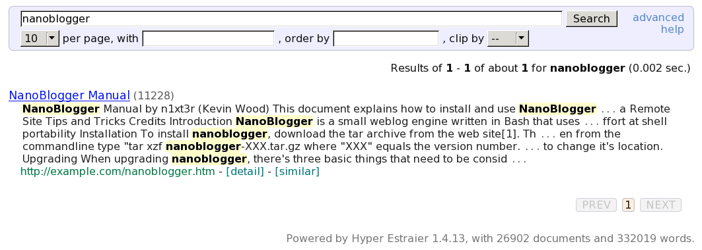

...making Linux just a little more fun!
Rick Moen [rick at linuxmafia.com]
An lg-announce subscriber was evidently surprised by the monthly reminder e-mail that starts out:
This is a reminder, sent out once a month, about your lists.linuxgazette.net mailing list memberships. It includes your subscription info and how to use it to change it or unsubscribe from a list.
----- Forwarded message from Rick Moen <rick@linuxmafia.com> -----
Date: Mon, 1 Dec 2008 09:58:06 -0800 From: Rick Moen <rick@linuxmafia.com> To: [subscriber address] Cc: mailman-owner@lists.linuxgazette.net Subject: Re: Fwd: lists.linuxgazette.net mailing list memberships reminderQuoting [subscriber]:
> I don't think its a very good idea to send out user passwords in emails.
[subscriber] --
The Mailman Web pages did advise you at the time you signed up that you should use a low-security password. That's why. Actually, here's the exact, literal quotation:
"You may enter a privacy password below. This provides only mild
security, but should prevent others from messing with your
subscription. Do not use a valuable password, as it will
occasionally be emailed back to you in cleartext."
In any event, if you do not want your password periodically sent in a reminder mail, all you have to do is disable that option for your subscription. Login at http://lists.linuxgazette.net/mailman/listinfo/lg-announce (using, yes, your subscription password), and you can toggle off that setting among others.
----- End forwarded message -----
Amit k. Saha [amitsaha.in at gmail.com]
Hi all,
Greetings!
I am using Ubuntu 8.10. I am facing strange issues on my installation. I cannot install any package from the repo:
sudo apt-get install tar [sudo] password for amit: Reading package lists... Done Building dependency tree Reading state information... Done Suggested packages: ncompress The following NEW packages will be installed: tar 0 upgraded, 1 newly installed, 0 to remove and 98 not upgraded. Need to get 0B/338kB of archives. After this operation, 2298kB of additional disk space will be used. dpkg-deb (subprocess): failed to exec tar: No such file or directory dpkg-deb: subprocess tar returned error exit status 2 dpkg: error processing /var/cache/apt/archives/tar_1.20-1_i386.deb (--unpack): subprocess dpkg-deb --control returned error exit status 2 Errors were encountered while processing: /var/cache/apt/archives/tar_1.20-1_i386.deb E: Sub-process /usr/bin/dpkg returned an error code (1)
This is what happens.
What might have probably caused this is that I removed 'nautilus' and put on 'Dolphin' file manager. I am not sure.
Any thoughts how can I fix this?
Much appreciated.
Thanks, Amit
-- Amit Kumar Saha http://amitksaha.blogspot.com http://amitsaha.in.googlepages.com/ Skype: amitkumarsaha
[ Thread continues here (4 messages/3.89kB) ]
Ben Okopnik [ben at linuxgazette.net]
[from austinist, via RISKS Digest]
http://austinist.com/2008/12/10/aisd_teacher_throws_fit_over_studen.php
Detention for the student and legal threats from a clueless teacher. Hilarious.
-- * Ben Okopnik * Editor-in-Chief, Linux Gazette * http://LinuxGazette.NET *
[ Thread continues here (10 messages/14.50kB) ]
Jimmy O'Regan [joregan at gmail.com]
"Lectures on Russian Literature: Pushkin, Gogol, Turgenef, Tolstoy" by Ivan Panin is being proofread at Distributed Proofreaders, using OCR provided by Tesseract: http://www.pgdp.net/c/project.php?id=projectID49430d0ed814f (for anyone already registered).
The project comments aren't very promising though: "This is a tesseract test project. I know the OCR is rather gruesome - please rather work on something else than shoot me." and "This project might go through P1 twice."
(I haven't seen anything other than the usual set of OCR errors, though).
Ben Okopnik [ben at linuxgazette.net]
[Article in NYTimes by John Markoff, via the RISKS Digest]
Despite the efforts of the computer security industry and a half-decade struggle by Microsoft to protect its Windows operating system, malicious software is spreading faster than ever. The so-called malware surreptitiously takes over a PC and then uses that computer to spread more malware to other machines exponentially. Computer scientists and security researchers acknowledge they cannot get ahead of the onslaught.
(Full story here: http://www.nytimes.com/2008/12/06/technology/internet/06security.html)
Gosh, that last sentence has me all terrified. "Cannot get ahead of the onslaught", even.
I remember the last time I had a virus. I downloaded it, compiled it (in a chroot-jail sandbox, just in case), and played with it for a bit - it created a neat little "/tmp/.bliss" log file for me to read. Then, I ran it again with an option that told it to go away, and it was gone.
It didn't make me feel onslaughtered (I think that's the proper verb... <barbie_mode>English is *hard!</barbie_mode>) at all. I don't know what those other people's problem is.
Seriously - it's a badly-written article, with lots of name dropping and little actual research. The author doesn't even mention Linux (or BSD, or any options beyond OS/X.) The general point is that the Bad Guys are making lots of money ripping off the poor little users... but this is just the same old three-card monty multiplied by a few million naive hayseeds just off the train. Yep, there are more con men and more suckers, as well as more unsuspecting mules. [shrug] It's called a "growing population" and "better communications". That, as always, presumes either A) an increased ability to swim with the sharks or B) accepting, however unwillingly, your role as an hors d'oeuvre . There is no option C - and never has been.
I guess the NYT needs some low-calorie filler for their Technology section once in a while...
-- * Ben Okopnik * Editor-in-Chief, Linux Gazette * http://LinuxGazette.NET *
[ Thread continues here (3 messages/4.94kB) ]
clarjon1 [clarjon1 at gmail.com]
Hey, Gang, long time no word from me.
I was using StumbleUpon, when I came across this link:
http://www.webmonkey.com/blog/Why_You_Should_Turn_Gmail_s_SSL_Feature_On_Now
In short, it's a notice that: a) Google has enabled you to use HTTPS only for GMail, to make it more secure, and b) There's a new tool to allow malicious users to gain access to your GMail if you don't use HTTPS/SSL mode.
To enable, click the Options link at the top of the page, then scroll down to the last option. For me, this was the HTTPS/SSL enabler.
I hope this helps someone! Take care all, and safe browsing!
-- Jon
Martin J Hooper [martinjh at blueyonder.co.uk]
Im sure you guys have done at least one of the things on this list...
http://www.cavecanen.org/linux/humour/horrorstories.txt
[ Thread continues here (4 messages/3.39kB) ]
Ben Okopnik [ben at linuxgazette.net]
Interesting court case involving the RIAA.
[ ... ]
[ Thread continues here (13 messages/45.81kB) ]
[ In reference to "A Short Tutorial on XMLHttpRequest()" in LG#123 ]
Luis Navarro [navarro_luis_a at yahoo.com.ar]
Excelent tutorial! Thanks verry much! It is all we need to understand AJAX in a few minutes.
[ In reference to "Book Review: CUPS Administrative Guide" in LG#157 ]
Neil Youngman [ny at youngman.org.uk]
One for pedants corner here.
I noticed the use if the verb "administrating" in the article, where to me the natural verb is "administering" and I started to wonder where this variant came from. I have seen this before in many technical articles and I would like to know whether all USians use administrate instead of administer, or whether it is specific to the administration of computers?
Neil
[ Thread continues here (8 messages/11.96kB) ]
[ In reference to "Keymap Blues in Ubuntu's Text Console" in LG#157 ]
Kapil Hari Paranjape [kapil at imsc.res.in]
Hello,
The article on Ubuntu and Keymap blues is (IMHO) too heavy on opinion and too sparse in solutions. Here are some more detailed comments:
1. The author drops openSUSE because of KDE 4.1 and feels that openSUSE's support for Gnome is poor. So on to Ubuntu, only to worry about the console keymap. This is surely odd as one can use a terminal inside Gnome and configure its keymap using X or gconf or whatever. By the way the author talks about text-mode keymap when what is meant is the vt-console keymap. 2. The author could have consolidated the complaints about console-tools in one place and then gone on to explain how kbd is better and can be configured. Instead we have few hints on how to (for example) configure kdb to use the Dvorak keyboard (a problem stated at the beginning) and lot of complaints about differences between console-tools and kbd keymappings for function keys. 3. A sample keymap which is "sized down" and does fit the author's needs would have been a good attachment to the article. 4. The author ends with "However, to make them consistent, you need consensus." I would add that "To obtain consensus, you need a good consistent solution to all the woes of the Linux console." Is the author willing to propose such a solution?
A bit annoyed-ly,
Kapil. --
[ Thread continues here (3 messages/3.42kB) ]
Mulyadi Santosa [mulyadi.santosa at gmail.com]
Bash has feature called "word designators". I find it useful if you want to execute a command following the previous one with same set of parameters.
For example, instead of:
# ls -l /boot/vmlinuz-2.6.22-14-generic # stat /boot/vmlinuz-2.6.22-14-generic
I could simply type:
# ls -l /boot/vmlinuz-2.6.22-14-generic # stat !$
It would recall the last parameter of "ls"
Another variation. Let's say first you want to do:
# cat text-1.txt text-2.txtbut then you realize the text are too long, so you turn into "tail":
# tail text-1.txt text-2.txt OR # tail !*It would recall all the parameters except the first one (technically, the zeroth one actually).
regards,
Mulyadi.
Ben Okopnik [ben at linuxgazette.net]
Occasionally, there are times that I don't feel like seeing someone's email in my inbox for a while - for whatever reason. At those times, "procmail" is very useful.
First, you need to calculate the "timeout" interval in seconds and add it to the current date and time. Fortunately, the 'date' command makes this easy:
# There are 86400 seconds in a day ben@Tyr:~$ days=3; echo $(($(date +%s) + 86400 * $days)) 1230944808
You can now use that value to determine whether that interval has elapsed - i.e., you can create a filter within your "~/.procmailrc" file based on that test:
:0: ##### Specify the 'From' or 'From:' address * ^From.*joe@rant\.org ##### You can also narrow it down by subject if desired * ^Subject.*Cut\ the\ crap * ? test $((1230944808 - $(date +%s))) -gt 0 ##### If all of the above criteria match and the difference between the ##### current date and the end date is greater than 0, discard the email /dev/null
May everyone's holidays be merry, bright, and peaceful.
-- * Ben Okopnik * Editor-in-Chief, Linux Gazette * http://LinuxGazette.NET *
Ben Okopnik [ben at linuxgazette.net]
If you occasionally can't ping a host on your network, and suspect that a wonky connection is to blame, troubleshooting can be a pain: watching the output of "ping hostname" while crawling around in the dust under a desk is, to put it mildly, a challenge. Enter the "-a" option to 'ping', added by one of the people on the "iputils" team, Patrik Schilt: when there's no connection, "ping -a hostname" simply sits and waits, but as soon as one appears, it starts emitting audio beeps. That's a wonderful "wishlist" feature, and should significantly improve the life of any sysadmin who has ever groveled amongst the dropped corn chips and the roach poop.
-- * Ben Okopnik * Editor-in-Chief, Linux Gazette * http://LinuxGazette.NET *
[ Thread continues here (25 messages/35.92kB) ]
Ben Okopnik [ben at linuxgazette.net]
While I was writing my last tip (about audible ping), my wife said "you
know, what would be really useful is something that would start
pinging when the connection went down!" An easy sentiment to understand,
since we connect our laptops via a pair of cables with a cranky old
connector (and my laptop's Ethernet port's retainer is broken, meaning
that cables won't stay in it for long.) So, I cranked out this useful
little script, "hostwatch". It takes a hostname or IP as an argument,
tells you that it's watching the specified host, starts audibly
pinging when a connection goes down, and stops pinging (resets itself
back to watch status) when the connection comes back up. All in all, a
very useful gadget for the Okopnik family network. 
#!/bin/bash
# Created by Ben Okopnik on Sun Nov 30 15:41:06 EST 2008
[ -z "$1" ] && { printf "Usage: ${0##*/} <hostname> \n"; exit; }
echo "Watching host '$1' - press 'Ctrl-C' to interrupt..."
while :
do
while fping -c 1 "$1">/dev/null 2>&1
do
sleep 1
done
until fping -c 1 "$1">/dev/null 2>&1
do
echo -e "\007Connection to '$1' is DOWN."
sleep 1
done
echo "Connection to '$1' is UP again."
done
Note that this script requires "fping" rather than just "ping".
-- * Ben Okopnik * Editor-in-Chief, Linux Gazette * http://LinuxGazette.NET *
By Deividson Luiz Okopnik and Howard Dyckoff

|
Contents: |
Please submit your News Bytes items in plain text; other formats may be rejected without reading. [You have been warned!] A one- or two-paragraph summary plus a URL has a much higher chance of being published than an entire press release. Submit items to bytes@linuxgazette.net.
 LPI to launch new LPIC-1 and LPIC-2 certification programs
LPI to launch new LPIC-1 and LPIC-2 certification programsThe Linux Professional Institute (LPI) has completed an update of the exam objectives for its popular LPIC-1 and LPIC-2 certification programs. New versions of these exams will be published and available on April 1, 2009. Exams taken before that date will continue to be based on the older, current objectives and materials.
"This update of our LPIC-1 and LPIC-2 certification program is a significant milestone in LPI's history and exemplifies our extensive, ongoing and transparent communications with industry leaders and the Open Source community on what are the necessary skill sets for a Linux professional," said Jim Lacey, President and CEO of the Linux Professional Institute. Mr. Lacey noted many of the changes to the exams are the result of extended consultations with partner organizations in the field and others that support LPI's certification program: "As an example, we have broadened the scope of the LPIC-1 exams to appeal to a wider range of Linux professionals while focusing in-depth system administration and networking skills in the LPIC-2 certification."
Mr. Lacey also indicated that the increasing global relevance of the LPIC program has made it necessary that these new exams are much more sensitive to non-English exam candidates and include a greater number of questions around localization, internationalization, and accessibility issues.
Revised exam objectives for LPIC-1 and LPIC-2 are available on LPI's public wiki: https://group.lpi.org/publicwiki/bin/view/Examdev/WebHome.
The Linux Professional Institute also announced in December improvements to its growing training partner program. LPI has more than 220 approved training partners in 35 countries around the globe. In the last six months alone, LPI has added training partners in Belgium, Canada, Hong Kong, Italy, Korea, the Netherlands, the Philippines, Slovakia, Spain, Switzerland, Tunisia, and the United Kingdom.
New Fedora 10 Adds Security and VirtualizationThe Fedora Project, a community-supported open source collaboration project, announced the availability of Fedora 10 in late November.
Fedora 10 is the tenth community release in five years. It features substantial virtualization improvements for remote installation and management of storage provisioning. These features will make system administration of virtual machine hosts and guests easier and more capable of automation, especially as they are integrated into Red Hat Enterprise Linux. Additionally, Fedora 10 includes NetworkManager connection sharing, allowing laptop users with an Ethernet or mobile broadband connection to provide Internet routing to others through the laptop wireless interface, for instant collaboration anywhere, anytime.
This release includes the premiere of a new graphical boot system called Plymouth, designed to speed up the boot process by taking advantage of a new kernel mode setting feature.
Fedora 10 also features a new security auditing and detection toolkit called SecTool, and a brand-new set of Python bindings that allow programmers to use the FIPS-140 validated NSS library for rapid development of secure applications. The distribution also extends the Live USB persistence feature that was pioneered in Fedora 9, adding support for a separate user data area with optional encryption for the ultimate experience in secure, portable computing.
Among its new features, Fedora 10 includes the new OpenOffice.org 3.0 and GNOME 2.24.1; a rewritten audio system for faster response and lower power usage; a full set of appliance building tools; and support for more PC hardware.
For more information on Fedora 10, to download the distribution or to join this community effort, please visit http://fedoraproject.org/.
SUSE Linux Real Time Sets Performance RecordIn independent tests performed by the Securities Technology Analysis Center (STAC), SUSE Linux Enterprise Real Time delivered the lowest mean and maximum latencies ever recorded with the Reuters Market Data System (RMDS), as well as the highest RMDS throughput for a two-socket server. These impressive results for Novell were significantly better than similar benchmark tests performed by STAC on other Linux and UNIX operating systems.
In its newly-released report, STAC measured the performance of a market data stack based on the Reuters Market Data System when running on SUSE Linux Enterprise Real Time and compared it to the same stack using a general purpose operating system and gigabit Ethernet technologies.
According to the independent tests performed by STAC, SUSE Linux Enterprise Real Time delivered 10.1 million updates per second, the highest throughput ever recorded on their standard benchmark test for a two-socket Linux or UNIX system configuration - more than 670 percent higher than an alternative solution using a general purpose operating system and gigabit Ethernet technologies. In the same tests, SUSE Linux Enterprise Real Time achieved the lowest mean RMDS latencies recorded to date by STAC on Linux or UNIX systems at nearly all throughput rates. SUSE Linux Enterprise Real Time was able to maintain under 0.67 milliseconds of mean latency at rates of up to 750,000 updates per second and maximum latencies never exceeded 3.01 milliseconds.
The tests were conducted using the latest HP blade servers and Intel Quad-Core Xeon processors, along with Voltaire InfiniBand hardware and Voltaire Messaging Accelerator (VMA) software. The specific solution independently tested by STAC is available for customers to purchase and implement today and is fully supported by Novell and its partners.
Flash Security PatchAdobe has issued critical security patches for the Linux version of its Flash player. Older versions have a vulnerability can be exploited through a specially crafted SWF file. The vulnerability affects Adobe Flash Player versions 10.0.12.36 and earlier and 9.0.151.0 and earlier.
Linux users are urged to update the Flash Player on their systems to version 10.0.15.3.
More information about this update can be found on http://www.adobe.com/support/security/bulletins/apsb08-24.html
Oracle Contributes Data Integrity Code to Linux CommunityTo advance Linux use in enterprise, Oracle contributed block I/O data integrity infrastructure code to the 2.6.27 Linux kernel in December. This open source code, in part developed with Emulex, exposes key data protection information to the Linux kernel. This can enable subsystems for the first time to utilize crucial data integrity features - and now extend protection from applications to storage to Linux operating system - for comprehensive data integrity capabilities across the entire software stack. This can reduce system downtime and provides cost savings to end users while meeting more stringent government regulations.
Oracle and Emulex are also working together to conduct an early adopter program where a select group of customers can test the end-to-end data integrity features in real world environments.
Additional Details:
* This code contribution includes generic support for data
integrity at the block and file system layers, as well as support
for the T10 Protection Information Model (formerly known as DIF)
and the Data Integrity Extensions.
* The Data Integrity Extensions, developed in collaboration with
Emulex, augment the T10 standard by allowing protection
information to be transferred to and from host memory, enabling
end-to-end data integrity protection.
* The Oracle-developed code is the first implementation of the T10
Protection Information Model standard for an operating system.
The INCITS/T10 "Protection Information Model" will help provide end-to-end data protection for block devices. Read more at Oracle's page: http://www.oracle.com/us/corporate/press/017754_EN .
MySQL 5.1 GA Boosts Large-Scale Database ApplicationsIn December, Sun Microsystems announced general availability of MySQL 5.1, a major new release of the popular open source database. Designed to improve performance and simplify management of large-scale database applications, the production-ready MySQL 5.1 software is available for download now at http://dev.mysql.com/downloads.
MySQL 5.1 was downloaded more than 250,000 times in first the ten days it was available.
The MySQL 5.1 release is available via three models to serve different
users:
- MySQL Community Server - An open source version of Sun's MySQL
database. Licensed under the GPL, this full-function software is
targeted to a technical user who does not require commercial
support.
- MySQL Enterprise Server - Available as part of a MySQL
Enterprise subscription, this is the secure and up-to-date version
of the MySQL database, targeted to corporate IT users. Subscribers
receive monthly rapid software updates and quarterly service packs
along with access to proactive monitoring tools and 24x7
production technical support.
- MySQL Embedded Server - This commercially-licensed version of
the MySQL software allows ISVs and OEMs to embed or bundle a
high-speed, small-footprint database with their own products,
without the free-distribution requirements of the GPL license.
For downloads and more information on MySQL 5.1, go to http://www.mysql.com/51.
Toshiba, IBM, and AMD Develop World's Smallest SRAM CellToshiba Corporation , IBM, and AMD have together developed a Static Random Access Memory (SRAM) cell that has an area of only 0.128 square micrometers (µm2), the world's smallest functional SRAM cell that makes use of fin-shaped Field Effect Transistors (FinFETs). This cuts the size of SRAM cells by more than 50% while improving memory stability. The technology positions FinFETs as an attractive structure for SRAMs in the 22nm node and beyond.
SRAM cells are circuit components in most systems-level, large-scale integrated circuits such as microprocessors, and smaller SRAM cells can support smaller, faster processors that consume less power. The technology was announced on December 16 in a technical paper presented at the 2008 International Electron Devices Meeting (http://www.his.com/~iedm/general/) in San Francisco, California.
Researchers from the three companies fabricated a highly scaled FinFET SRAM cell using HKMG (the high-k dielectric and metal gates process). It is the smallest nonplanar-FET SRAM cell yet achieved: at 0.128µm2, the integrated cell is more than 50 percent smaller than the 0.274µm2 nonplanar-FET cell previously reported. To achieve this goal, the team optimized the processes, especially for depositing and removing materials, including HKMG from vertical surfaces of the non-planar FinFET structure.
The researchers also investigated the stochastic variation of FinFET properties within the highly scaled SRAM cells and simulated SRAM cell variations at an even smaller cell size. They verified that FinFETs without channel doping improved transistor characteristic variability by more than 28 percent. In simulations of SRAM cells of 0.063µm2 area, equivalent to or beyond the cell scaling for the 22nm node, the results confirmed that the FinFET SRAM cell is expected to offer a significant advantage in stable operation compared to a planar-FET SRAM cell at this generation.
Learn from Leaders in the Storage Industry at the 7th USENIX Conference on File and Storage Technologies (FAST '09)
Join us in San Francisco, CA, February 24-27, 2009, for the 7th USENIX Conference on File and Storage Technologies. On Tuesday, February 24, FAST '09 offers ground-breaking file and storage tutorials by industry leaders such as Brent Welch, Marc Unangst, Simson Garfinkel, and more. This year's innovative 3-day technical program includes 23 technical papers, as well as a Keynote Address, Work-in-Progress Reports (WiPs), and a Poster Session. Don't miss out on opportunities for peer interaction on the topics that mean the most to you.
Register by February 9 and save up to $200!

SCALE 7x, the premier Open Source Community conference in the southwestern United States, will be February 20th - 22nd, 2009. It will also return to the Westin LAX Hotel, site of last year's 6th Expo.
For 2009, the main weekend conference has been expanded: in addition to the three main tracks, a Beginner's track and a Developer's track have been added. SCALE will also reprise the Women In Open Source ("WIOS"), and Open Source Software In Education ("OSSIE") specialty tracks on the Friday prior to SCALE.
DOHCS, the Demonstrating Open Source Health Care Solutions conference, has spun off on its own but will be co-located with SCALE on the Friday prior to SCALE. See their Web site at http://www.dohcs.org for info and to register.
A Full Access conference pass (Friday - Sunday) cost only $60. Register for SCALE 7x at http://www.socallinuxexpo.org.
Jaunty Jackalope Alpha 2 releasedJaunty Jackalope Alpha 2 is ready for testing; this release will in time become the Ubuntu 9.04 release.
Alpha 2 is the second in a series of milestone CD images that will be
released throughout the Jaunty development cycle. The Alpha images are
thought to be free of show-stopping build or install bugs. The current
snapshots can download it here:
http://cdimage.ubuntu.com/releases/jaunty/alpha-2/ (Ubuntu)
http://cdimage.ubuntu.com/kubuntu/releases/jaunty/alpha-2/ (Kubuntu)
http://cdimage.ubuntu.com/xubuntu/releases/jaunty/alpha-2/ (Xubuntu)
Please refer to http://www.ubuntu.com/testing/jaunty/alpha2 for information on changes in Ubuntu. Ubuntu 9.04 Alpha 3 is planned for mid-January 2009.
Good OS Announces gOS Cloud Operating SystemIn November, Good OS, most known for its gOS Linux that debuted in Wal-Mart computers, announced "Cloud," a new operating system that boots into a browser with Google and Yahoo! in seconds and optionally boots into Windows.
Good OS previewed Cloud on a GIGABYTE Touch-Screen Netbook at the Netbook World Summit in Paris and online at http://www.thinkgos.com. GIGABYTE Touch-Screen Netbooks will be preloaded with Cloud and Windows XP together early in 2009.
Cloud integrates a Web browser with a compressed Linux operating system kernel for immediate access to Internet, integration of browser and rich client applications, and full control of the computer from inside the browser, and features an attractive icon dock for shortcuts to favorite apps and tabs for multi-tasking between Web and rich client apps.
"Cloud is my favorite gOS product yet," said David Liu, Founder and CEO of Good OS. "Just seconds after I power on, I'm Googling, Yahooing, and truly Living. I am very excited about the upcoming GIGABYTE Touch-Screen Netbooks with Cloud and Windows. I think the GIGABYTE Touch-Screen Netbook's forward thinking hardware and software will make it the best Netbook to hit the market!"
More details about Cloud and GIGABYTE Touch-Screen Netbooks will be released on January at the Consumer Electronics Show in Las Vegas.
openSUSE 11.1 Improves User ExperienceThe openSUSE Project, a Novell-sponsored and community-supported open source project, announced the release of openSUSE 11.1 in mid-December. The new release delivers a richer user experience with enhancements to desktop productivity, entertainment applications, and software and system management.
openSUSE 11.1 was entirely developed using the recently released openSUSE Build Service 1.0, a new collaboration system that enables contributors to work closely together on Linux packages or solution stacks. This allows quicker developer contributions to the openSUSE project.
Updates to openSUSE 11.1 include:
- The new 2.6.27.7 Linux kernel which also adds support for a
number of new devices and improved video camera support;
- An improved remote desktop experience with Nomad;
- A simpler license that eliminates the EULA and removes software
which previously made it difficult to redistribute openSUSE;
- Improvements to YaST, openSUSE's system administration and
installation suite, including an improved partitioner, new printer
module, and a new module to check system security;
- Latest versions of major applications including Firefox 3.0.4,
OpenOffice.org 3.0, GNOME 2.24.1, KDE 4.1.3 + KDE 3.5.10 and Mono
2.0.1;
- Most recent versions of GNOME and KDE.
openSUSE 11.1 can be freely downloaded now at http://www.opensuse.org. A retail box version is also available for $60 at http://shop.novell.com and includes 90 days of installation support, commercial applications not on the main DVD, and the popular "Getting Started Guide," a printed manual for new Linux users.
Mandriva presents new Mandriva Flash 2009Mandriva announced Mandriva Flash 2009, the new product in the popular Mandriva Flash family. It enables mobility of an entire desktop and can be run from any PC in just a few clicks. It is a fully operational system requiring no installation and which fits into any pocket.
Mandriva Flash is a complete work station with the following software
for Linux:
- Mozilla Firefox and Thunderbird;
- Ezboot, to boot into Mandriva Flash from Windows;
- KDE 4, the advanced, attractive and efficient Linux desktop;
- Java and Flash help in Web content;
- Skype for phone calls over the Internet;
- Google Toolbar to make searching easier;
- OpenOffice.org - compatible with most widely used office suites.
This new version comes with a migration tool enabling you to import Windows settings and documents.
Mandriva Flash 2009 is available in several languages. The new 8 GB model is available now for $55 US and can be found on http://store.mandriva.com/.
Slackware 12.2 now outSlackware 12.2 was released in December with many improvements over Slackware 12.1. Among the many program updates and distribution enhancements are two desktop environments: Xfce 4.4.3 and KDE 3.5.10.
Slackware uses the 2.6.27.7 kernel with support for X DRI (the Direct Rendering Interface) which brings high-speed hardware accelerated 3D graphics to Linux.
Here are some of the advanced features of Slackware 12.2:
- The 2.6.27.7 version of the Linux kernel;
- System binaries are linked with the GNU C Library, version 2.7;
- Installs gcc-4.2.4 as the default C, C++, Objective-C, Fortran-77/95, and Ada 95 compiler;
- Apache (httpd) 2.2.10 Web server and PHP 5.2.8;
- PCMCIA, CardBus, USB, IEE1394 (FireWire) and ACPI support;
- New development tools, including Perl 5.10.0, Python 2.5.2, and much more
- Package tracking to help upgrade from Slackware 12.1 to Slackware
12.2. The slackpkg tool can also help update from an older version of
Slackware to a newer one
- Includes KDE's Konqueror 3.5.10, SeaMonkey 1.1.13 (this is the
replacement for the Mozilla Suite), and Firefox 3.0.4, as well as the
Thunderbird 2.0.0.18 email and news client with advanced junk mail
filtering.
Get Slackware 12.2 here: ftp://ftp.slackware.com/pub/slackware/slackware-12.2/
Adobe AIR 1.5 Now Available for LinuxIn December, Adobe Systems announced availability of Adobe AIR 1.5 software for Linux operating systems. Adobe AIR 1.5, a key component of the Adobe Flash Platform, enables Web developers to use HTML, JavaScript, ActionScript and the free, open source Flex framework to deliver Web applications outside the browser.
"The release of Adobe AIR 1.5 for Linux builds on our ongoing commitment to the Linux community and our legacy of creating technologies that work consistently across operating systems," said David Wadhwani, general manager and vice president of the Platform Business Unit at Adobe. "Using Adobe AIR, millions of Web developers can now be Linux developers, and with little effort and no additional costs, companies can now target emerging markets and a broad set of new devices where Linux is growing in popularity." The graphical capabilities of Adobe AIR, along with its access to operating system functionality, give AIR applications the capacity to provide unprecedented user experiences and brand differentiation for the developers and companies creating them.
AIR 1.5 includes functionality introduced in Adobe Flash Player 10, such as support for custom filters and effects, native 3D transformation and animation, and extensible rich text layout. Offering new features and performance improvements to create more expressive AIR applications, Adobe AIR 1.5 incorporates the open source WebKit HTML engine and now accelerates application performance with "SquirrelFish," the new WebKit JavaScript interpreter. Adobe AIR 1.5 also includes an encrypted database for enterprise security compliance requirements.
Adobe AIR 1.5 for Linux is available as a free download at http://get.adobe.com/air/.
Ubuntu on Amazon EC2 Beta ReleasedThe Ubuntu team is now offering a beta release of Ubuntu 8.10 Server Edition on Amazon's EC2 cloud computing service. This is the first beta release of an Ubuntu Server Edition image optimised for EC2's cloud computing environment.
This service allows users to create a fully running instance of Ubuntu Server on EC2 in just a few clicks. All the applications, such as a Web server, E-mail server and common development frameworks, are available. There's no charge for using Ubuntu on Amazon EC2, it's provided without charge complete with maintenance updates. However, Amazon will charge EC2 users for their usage of the service.
Canonical has fully tested the images of Ubuntu Server Edition on Amazon's EC2 service but they want wider testing from the community and also want to learn how user interact with EC2 so they can make improvements.
Apply for access to the EC2 beta program here: http://www.ubuntu.com/ec2.
New VirtualBox 2.1 Improves Virtualization PerformanceSun Microsystems released a new version of Sun xVM VirtualBox, its free and open source desktop virtualization software in December. This new version offers improved support for VMware's virtual machine disk format (VMDK) and Microsoft's virtual hard disk (VHD) file format, allowing the transfer of critical business information. To download the freely distributed xVM VirtualBox software, visit: http://www.sun.com/software/products/virtualbox/get.jsp.
Users of xVM VirtualBox 2.1 software will benefit from significant improvements in graphics and network performance, easier configuration, hardware platform support for the latest processors and additional interoperability. The update allows users to run a 64-bit guest OS on 32-bit host platforms without the need to upgrade the host OS. VirtualBox now offers improved performance on the new Intel Core microarchitecture in the Core i7 processor family (codenamed Nehalem).
VirtualBox 2.1 features a number of new enhancements, including:
- New Accelerated 3D Graphics: Uses the industry standard
application programming interface (API) for high-performance
graphics, Open Graphics Library (OpenGL), allowing users to run
applications like Google Earth and CAM-based software used by
industrial designers, architects, etc.
- Improved Network Performance: Makes network intensive
applications like video faster. Bridged networking configurations
on Windows and Linux platforms makes it easier to deploy server
applications in virtual machines using Web stacks like LAMP or
SAMP.
- Better Storage Support: Comes with built-in iSCSI support to
connect to storage systems and enables easier management and
sharing of virtual disk images.
xVM VirtualBox software has been growing in popularity, surpassing 8 million downloads worldwide since October 2007.
JBoss Application Server gets Java EE 5 CompatibilityAfter launching its JBoss Application Server 5.0 release from the JBoss.org Community in November, the JBoss team has officially confirmed that the JBoss Application Server is Java EE 5 Certified.
Read about the Java EE certification here: http://java.sun.com/javaee/overview/compatibility.jsp
Enterprise support for JBoss Application Server 5 will be included in JBoss Enterprise Application Platform v5, the enterprise release expected early in 2009.
HP expands Linux offerings for business and educationTo provide customers with more cost-effective and secure computing options, HP has introduced a new desktop offering with SUSE Linux Enterprise Desktop from Novell on the HP Compaq dc5850. This joint solution delivers a tightly integrated suite of essential applications, including OpenOffice.org, Web browser, multimedia tools, and email with collaboration and instant messaging software to drive productivity for business customers.
For education customers, HP is working with Novell to develop and maintain a repository of more than 40 applications, including math, art and word games, to improve student learning. In addition, applications for school administration and instruction will be available for teachers and administrators.
The HP Compaq dc5850 with SUSE Linux Enterprise Desktop available Dec. 15 in North America at a U.S. street price of about $500.
Zmanda Launches Advanced Backup Based on OpenSolaris ZFSZmanda released both Amanda Enterprise and Zmanda Recovery Manager (ZRM) for MySQL for the OpenSolaris 2008.11 platform, which was announced by Sun Microsystems in December, and will be available in OpenSolaris repositories.
The combination of Zmanda's backup solutions with Sun's ZFS file system, creates an advanced backup-to-disk offering. Specifically, the snapshot capability of ZFS enables fast and scalable backups of demanding workloads.
ZRM for MySQL is a mission-critical backup and recovery solution designed specifically for MySQL databases. ZRM includes unique, enterprise-grade features such as MySQL storage engine and snapshot intelligence, replication support, and integration of backup operations with MySQL binary logs. ZRM comes with the Zmanda Management Console - a powerful Web-based graphical user interface that lets DBAs control backup and recovery across all MySQL servers from any browser enabled device.
For more information about Zmanda, visit http://www.zmanda.com.
Talkback: Discuss this article with The Answer Gang
![[BIO]](../gx/authors/dokopnik.jpg)
Deividson was born in União da Vitória, PR, Brazil, on 14/04/1984. He became interested in computing when he was still a kid, and started to code when he was 12 years old. He is a graduate in Information Systems and is finishing his specialization in Networks and Web Development. He codes in several languages, including C/C++/C#, PHP, Visual Basic, Object Pascal and others.
Deividson works in Porto União's Town Hall as a Computer Technician, and specializes in Web and Desktop system development, and Database/Network Maintenance.
Howard Dyckoff is a long term IT professional with primary experience at
Fortune 100 and 200 firms. Before his IT career, he worked for Aviation
Week and Space Technology magazine and before that used to edit SkyCom, a
newsletter for astronomers and rocketeers. He hails from the Republic of
Brooklyn [and Polytechnic Institute] and now, after several trips to
Himalayan mountain tops, resides in the SF Bay Area with a large book
collection and several pet rocks.
Howard maintains the Technology-Events blog at
blogspot.com from which he contributes the Events listing for Linux
Gazette. Visit the blog to preview some of the next month's NewsBytes
Events.

This article is based on Gnuplot in Action, to be published January 2009. It is being reproduced here by permission from Manning Publications. Manning early access books and ebooks are sold exclusively through Manning. Visit the book's page for more information.
The purpose of computing is insight, not numbers. -- R.W. Hamming The purpose of computing is insight, not pictures. -- L.N. Trefethen
I have been using gnuplot for 15 years, and it is an indispensable part of my toolset: one of the handful of programs I cannot do without.
Initially, I used gnuplot as part of my academic research work as a theoretical condensed matter physicist. But much later, when I joined Amazon.com, I found myself using gnuplot again, this time to analyze the movement of workers in Amazon's gargantuan warehouses and the distribution of packages to customers. Later yet, I found gnuplot very helpful when analyzing Web-traffic patterns for the Walt Disney Company.
I find gnuplot indispensable because it lets me see data, and to do so in an easy, uncomplicated manner. Using gnuplot, I can draw and redraw graphs and look at data in different ways. I can generate images of data sets containing millions of points, and I can script gnuplot to create graphs for me automatically.
These things matter. In one of my assignments, I was able to discover very relevant information because I was able to generate literally hundreds of graphs. Putting all of them on a Web page next to each other revealed blatant similarities (and differences) between different data sets - a fact that had never been noticed before, not least because everybody else was using tools (mostly Excel) that would only allow graphs to be created one at a time.
Gnuplot has always been popular with scientists all over - I hope to convince you that it can be useful to a much larger audience. Business analysts, operations managers, database and data warehouse administrators, programmers: really anybody who wants to understand data with graphs.
I'd like to show you how to do it.
Gnuplot is probably the most widely used open-source program to plot and visualize data. In this book, I want to show you how to use gnuplot to make plots and graphs of your data: both quick and easy graphs for your own use, and highly polished graphs for presentations and publications.
But I also want to show you something else: how to solve data analysis problems using graphical methods. The art of discovering relationships in data and extracting information from it by visual means is called "graphical analysis". I believe gnuplot to be an excellent tool with which to do it.
As a teaser, let's take a look at some problems and how we might be able to approach them using graphical methods. The graphs here and in the rest of the book (with very few exceptions) have been, of course, generated with gnuplot.
To get a feeling for the kinds of problems that we may be dealing with, and for the kinds of solutions that gnuplot can help us find, let's look at two examples. Both take place during a long and busy weekend.
Imagine you are in charge of organizing the local city marathon. There will be over 2000 starters, traffic closed around the city, plenty of spectators - and a major Finish Line Festival to celebrate the victors and help the wounded. The big question is: When should the Finish Line crew be ready to deal with the majority of runners? At what point do we expect the big influx of the masses?
You have available to you the results from last year's event. Assuming that the starters have not improved dramatically over the last year (probably a safe assumption!), you do a quick average on the completion times and find that last year's average was 172 minutes. To be on the safe side, you calculate the standard deviation as well, which comes out to about 15 minutes. So you tell your crew to be ready for the big rush starting two and a half hours (150 minutes) after the start, and feel reasonably well prepared for the event.
So it comes as a bit of a surprise when on the big day plenty of runners start showing up on the finish line after only 130 minutes - a good twenty minutes earlier than the expected onset of the rush. In terms of event management, 20 or 30 minutes are not catastrophic, yet it is a bit strange. The next day you wonder: What went wrong?
Let's take a look at the data to see what we can learn about it. So far, all we know of it is the mean and the standard deviation.
The mean is convenient: It is easy to calculate and it summarizes the entire data set in a single number. But in forming the mean, we lost a lot of information. To understand the whole data set, we will have to look at it. And since we can't understand data by looking at more than 2000 individual finish times, this means we will have to plot it.
It will be convenient to group the runners by completion time and to count the number of participants that completed during each full minute. The resulting file might start like this:
# Minutes Runners 133 1 134 7 135 1 136 4 137 3 138 3 141 7 142 24 ...Now we plot the number of runners against the completion.

Figure 1.1. Number of finishers vs. time to complete (in minutes).
It is immediately obvious where we went wrong: the data is bi-modal, meaning it has two peaks. There is an early peak at around 150 minutes, and a later main peak at 180 minutes.
Actually, this makes good sense: A major sporting event such as a city marathon attracts two very different groups of people: "athletes", who train and compete throughout the year and are in it to win, and a much larger group of "amateurs", who come out once a year for a big event and are mostly there to participate.
The problem is that for such data the mean and standard deviation are obviously bad representations - so much so that at the time when we expected the big rush (170 minutes), there is actually a bit of a lull at the finish line!
The take-home message here is that it is usually not a good idea to rely on summary statistics (such as the mean) for unknown data sets. We always should investigate what the data looks like. Once we have confirmed the basic shape, we can choose how to summarize our findings best.
And of course, there is always more to learn. In this example, for instance, we see that after about 200 minutes almost everybody has made it, and we can start winding down the operation. The actual "tail" of the distribution is quite small - actually a bit surprisingly so (I would have expected to see a greater number of real "stragglers", but possibly many runners that are really slow drop out of the race when they realize they will place badly).
Let's take a look at the gnuplot command that was used to generate figure 1.1. Gnuplot is command-line oriented: after you start gnuplot, it drops you into an interactive command session, and all commands are typed at the interactive gnuplot prompt.
Gnuplot reads data from simple text files, with the data arranged in
columns as shown above. To plot a data file takes only a single command:
plot, like this:
plot "marathon" using 1:2 with boxes
The plot command requires the name of the data file as
argument in quotes. The rest of the command line specifies which columns
to use for the plot, and in which way to represent the data. The
using 1:2 declaration tells gnuplot to use the first and
second column in the file called marathon. The final part of
the command: with boxes, selects a box style, which is often
suitable to display counts of events, as in this case.
Gnuplot handles most everything else by itself: it sizes the graph and selects the most interesting plot range, it draws the border, and it draws the tic marks and their labels. All these details can be customized, but gnuplot typically does a good job at anticipating what the user wants.
The same weekend that 2000 runners are running through the city, a diligent graduate student is working on his research topic. He studies Diffusion Limited Aggregation (DLA), a process wherein a particle performs a random walk, until it comes in contact with a growing "cluster" of particles. At the moment of contact, the particle sticks to the cluster at the location where the contact occurred and becomes part of the cluster. Now, a new random walker is released to perform random walk, until it sticks to the cluster. And so on.
Clusters grown through this process have a remarkably open, tenuous structure (cf. figure 1.2). DLA clusters are fractals, but rather little is known about them with certainty.[1]
Figure 1.2. A DLA cluster of N=30,000 particles, drawn with gnuplot.
The DLA process is very simple, so it seems straightforward to write a computer program to grow such clusters in a computer, and this is what our busy graduate student has done. Initially, all seems well, but as the simulation progresses, the cluster seems to grow more and more slowly. Excruciatingly slowly, in fact. The goal was to grow a DLA cluster of N=100,000 particles - will the program ever finish?
Luckily, the simulation program periodically writes information about its progress to a log file: for each new particle added to the cluster, the time (in seconds) since the start of the simulation is recorded. We should be able to predict the completion time from this data, but an initial plot (figure 1.3) is just not very helpful: there are just too many ways that this curve can be extrapolated to larger cluster sizes.

Figure 1.3. Time required to grow a DLA cluster.
However, the time consumed by many computer algorithms grows as a simple power of the size of the problem. In our case, this would be the number N of particles in the cluster: T ~ Nk, for some value of k. Our research student therefore plots the running time of his simulation program on a double logarithmic plot versus the cluster size - and, lo, the data falls on a straight line, indicating power law behavior. (I will explain later how and why this works.) Through a little trial and error, he also finds an equation that approximates the data quite well. The equation can be extended to any cluster size desired and will give the time required. For N=100,000 (which was the original goal), we can read off T=300,000 seconds (or more), corresponding to 83 hours or four days, so we can tell our friend that there is no point in spending the weekend in the lab - he should go out (maybe run a Marathon), and come back on Monday. Or perhaps work on a better algorithm. (For simulations of DLA cluster growth, dramatic speedups over the naive implementation are possible. Try it if you like.)

Figure 1.4. Time required to grow a DLA cluster in a double-logarithmic plot, together with an approximate mathematical model.
plot "data" using 1:2 with lines
The only difference compared to figure 1.1 is the style: rather than boxes,
I use line segments to connect consecutive data points, hence: with lines.
Did you notice that figure 1.3 and figure 1.4 contain more than just data? Both axes are now labelled! Details such as labels and other helpful decorations often make the difference between a mediocre and a high-quality graph, because they provide the observer with the necessary context to fully understand the graph.
In gnuplot, all details of a graph's appearance are handled by setting the appropriate options. To place the labels on the x- and y-axes in figure 1.3, I used:
set xlabel "Cluster Size" set ylabel "Run Time [sec]"
Figure 1.4 is drawn using double-logarithmic axes. This is yet another option, which is set as follows:
set logscale
Figure 1.4 shows two curves: the data together with a best "fit". Plotting
several data sets or mathematical functions together in one plot is very
simple: we just list them one after another on the command line for the
plot command:
plot "runtime" using 2:6 title "data" with lines, # # 1.2*(x/1000)**2.7 title "model"
This command introduces a further gnuplot feature: the title
directive. It takes a string as argument, which will be displayed together
with a line sample in the plot's key or legend (visible in the upper left
of figure 1.4).
Finally, we come to figure 1.2. That's a somewhat different beast. You will notice that the border and the tic marks are missing. The aspect ratio (the ratio of the graph's width to its height) has been constrained to 1, and a single dot has been placed at the position of each particle in the cluster. Here are the the most important commands that I used:
unset border unset xtics unset ytics set size square plot "cluster" using 1:2 with dots
You see that gnuplot is really very simple to use. In the next section, I'd like to talk more about using graphical methods to understand a data set, before coming back to gnuplot and discussing why it is my favorite tool for this kind of activity.
These two examples should have given you an idea what Graphical Analysis is and how it works. The basic steps are always the same:
We may try more sophisticated things, but this is the basic idea. If the hypothesis in step two seems reasonably well justified, we will often try and remove its effect, for instance by subtracting a formula from the data, to see whether there is any recognizable pattern in the residual. And so on.
Iteration is a crucial aspect of graphical analysis: plotting the data this way and that way, comparing it to mathematical functions or to other data sets, zooming in on interesting regions or zooming out to detect the overall trend, applying logarithms or other data transformations to change its shape, using a smoothing algorithm to tame a noisy data set... During an intense analysis session using a new but promising data set, it is not uncommon to produce literally dozens of graphs.
None of these graphs will be around for long. That's because they are transient, persisting just long enough for us to form a new hypothesis, which we'll try to justify in the next graph we may draw. This also means that these graphs will not be "polished" in any way, since they are the graphical equivalent to scratch paper: notes of work in progress, not intended for anyone but oneself.
This isn't to say that polishing doesn't have its place. But it comes later in the process: once we know what the results of our analysis are, we need to communicate them to others. At this point, we will create "permanent" graphs, which will be around for a long time - maybe until the next departmental presentation, or (if the graph will be part of a scientific publication, for instance), forever!
Such permanent graphs have different requirements: other people must be able to understand them, possibly years later, and most likely without us there to explain them. Therefore, graph elements like labels, captions, and other contextual information become very important. Presentation graphs must be able to stand by themselves. Presentation graphs also should make their point most clearly. Now that we know what the results of our analysis are, we should find the clearest and most easily understood way of presenting our findings. A presentation graph should make one point and make it well.
Finally, some would argue that a presentation graph should "look good". Maybe. If it makes its point well, there is no reason why it shouldn't be visually pleasing as well. But that is an afterthought. Even a presentation graph is about the content, not the packaging!
Graphical analysis is an investigation of data using graphical methods. The purpose is the discovery of new information about the underlying data set. In graphical analysis, the "proper" question to ask is often not known from the outset, but is discovered as part of the analysis process.
In contrast to graphical analysis, presentation graphics is concerned with the communication of information and results that are already understood: the discovery has been made, now it merely needs to be communicated clearly!
I use the term "control chart" somewhat loosely for situations where we already know the questions to ask of the data (as in the case of presentation graphics), but where the primary audience for the graph is not the public, but the people who created the data themselves. Besides classical control charts (for example in quality engineering), many plots of experimental data fall into this category, because the question is determined at the outset and the graph is drawn to extract specific values to answer it.
What graphical analysis, presentation graphics, and control charts have in common is that they are "digital": some aspect of reality has been measured and translated into numbers, and it is these numbers which are plotted (temperature, stock price, electric field strength, response time, ... whatever).
Reality representation by contrast tries to construct an image that is in some form analogous to the system under consideration. A regular topographic map is a simple form of reality representation. More complex computer-assisted methods include three-dimensional solid body imaging, many ray-tracing systems, most immersive "virtual reality" methods, and many network flow or relationship connectivity visualization systems.
Data analysis using reality representation is a large, amorphous, and highly experimental field.
Image analysis takes a two- or (rarely) three-dimensional image of the system under investigation and tries to detect significant structure in this image, often using color variations to indicate changes in value - think medical imaging. Image analysis may either be highly automated (using signal-processing methods), or be done visually. In the latter case, it shares aspects with graphical analysis.
This is the "classical" definition of data analysis. Statistical analysis typically tries to characterize a data set by calculating some mathematical quantity (such as the mean, the median, or the standard deviation) from the data. Statistical analysis gives a quantitative answer to a known, well-posed question.
Statistical analysis works great if we know what questions to ask of the data, and if we want to perform essentially similar analyses repeatedly (for instance after varying some control parameter in a prescribed fashion). But it is not applicable if the questions to ask is yet unknown, and it can be misleading even otherwise, as our Marathon example has shown: statistical analysis always makes some (silent) assumptions about the data, which may not be fulfilled in practice. These challenges are well-known in the statistical community.
Exploratory (or Initial) Data Analysis (EDA or IDA) is a term sometimes used in the statistical literature to describe the initial examination of data to determine its basic characteristics. Graphs typically play a large role. What makes it different from graphical analysis is that it is only seen as precursor to a "real" formal statistical analysis.
Graphical analysis is a discovery tool: we can use it to reveal as yet unknown information in data. In comparison to statistical methods, it helps us to discover new and possibly quite unexpected behavior.
Moreover, it helps us to develop an intuitive understanding of the data and the information it contains. Since it does not require particular math skills, it is accessible to anyone with an interest and a certain amount of intuition.
Even if rigorous model-building is our ultimate goal, graphical methods still need to be the first step, so that we can develop a sense for the data, its behavior and quality. Knowing this, we can then select the most appropriate formal methods.
Of course, graphical analysis has limitations and its own share of problems.
Graphical analysis doesn't scale. Graphical analysis is a manual process, which can't easily be automated. Each data set is treated as a separate special case, which is not feasible if there are thousands of data sets.
But this problem is sometimes more apparent than real. It can be remarkably effective to generate a large number of graphs and just browse them without studying each one in great depth. It is totally possible to scan a few hundred graphs visually, and doing so may already lead to a high-level hypothesis regarding the classification of the graphs into just a few sub-groups, which can then be investigated in detail. (Thank goodness gnuplot is scriptable, so that preparing a few hundred graphs poses no problem.)
Graphical analysis yields qualitative, not quantitative results. Whether you regard this as a strength or a weakness depends on your situation. If you are looking for new behavior, graphical analysis is your friend. If you are trying to determine by how many percent a new fertilizer treatment increases crop production, statistical analysis is the way to go.
It takes skill and experience. Graphical analysis is a creative process, using inductive logic to move from observations to hypothesis. There is no pre-scribed set of steps to move from a data set to conclusions about the underlying phenomena and not much that can be taught in a conventional, class-room format.
But by the same token, it does not require formal training, either. Ingenuity, intuition, and curiosity (!) are the most important character traits. Any one can play this game, if they are interested in finding out what the data tries to tell them.
Gnuplot is a program to explore data graphically. Its purpose is to generate plots and graphs from data or functions. It can produce highly polished graphs, suitable for publication, and simple throw-away graphs, when we are merely playing with an idea.
Gnuplot is command-line driven: you issue commands at a prompt, and gnuplot will redraw the current plot in response. Gnuplot is also interactive: the output is generated and displayed immediately in an output window. Although gnuplot can be used as a background process in batch-mode, typical use is highly interactive. On the other hand, its primary user interaction is through a command language, not through a point-and-click GUI interface.
Don't let the notion of a command-language throw you: gnuplot is easy to use - really easy to use! It takes only one line to read and plot a data file, and most of the command syntax is straightforward and quite intuitive. Gnuplot does not require programming, or any deeper understanding of its command syntax to get started.
So, this is the fundamental workflow of all work with gnuplot: plot, examine, repeat - until you have found out whatever you wanted to learn from the data. Gnuplot supports the iterative process model required for exploratory work perfectly!
To dispel one common confusion right away: gnuplot is not GNU software, has nothing to do with the GNU project, and is not released under the GNU Public License (GPL). Gnuplot is released under a permissive open-source license.
Gnuplot has been around a long time - a very long time, in fact. It was started by Thomas Williams and Colin Kelley in 1986. On the gnuplot FAQ, Thomas has this to say about how gnuplot was started and why it is called the way it is:
I was taking a differential equation class and Colin was taking Electromagnetics, we both thought it'd be helpful to visualize the mathematics behind them. We were both working as sys admin for an EE VLSI lab, so we had the graphics terminals and the time to do some coding. The posting was better received than we expected, and prompted us to add some, albeit lame, support for file data. Any reference to GNUplot is incorrect. The real name of the program is "gnuplot". You see people use "Gnuplot" quite a bit because many of us have an aversion to starting a sentence with a lower case letter, even in the case of proper nouns and titles. gnuplot is not related to the GNU project or the FSF in any but the most peripheral sense. Our software was designed completely independently and the name "gnuplot" was actually a compromise. I wanted to call it "llamaplot" and Colin wanted to call it "nplot." We agreed that "newplot" was acceptable but, we then discovered that there was an absolutely ghastly pascal program of that name that the Computer Science Dept. occasionally used. I decided that "gnuplot" would make a nice pun and after a fashion Colin agreed.
For a long time (about ten years), the stable major version of gnuplot was version 3.7.x, until version 4.0.0 was released in 2004. As part of the 4.x release, gnuplot has acquired a number of useful new features, including:
gnuplotbeta@lists.sourceforge.net.
I have already mentioned the most important reasons why I like gnuplot: easy to learn, easy to use, excellent support for iterative, exploratory use, yet nevertheless scriptable for bulk or offline processing, able to produce publication-quality graphs.
Here are some other reasons why I believe gnuplot is a good tool for many situations:
It is important to remember that gnuplot is a data plotting tool, nothing more, nothing less. In particular, it is neither a numeric or symbolic workbench, nor a statistics package. It can therefore only perform rather simple calculations on the data. On the other hand, it has a very flat learning curve, requiring no programming knowledge and only the most basic math skills.
Gnuplot is also no drawing tool. All its graphs are depictions of some data set, and it therefore has only very limited support for arbitrary box-and-line diagrams and none at all for free-hand graphics.
Finally, gnuplot makes no attempt at what I earlier called "reality representation". It is a tool for quantitative analysis, and therefore its bread-and-butter are dot and line plots. It has no support for three-dimensional solid body imaging, ray-tracing, fish-eye functionality, and similar techniques.
Overall, though, I regard these limitations more as "strengths-in-disguise": in the Unix tradition, gnuplot is a rather simple tool, doing (mostly) one thing, and doing it very, very well.
In this article, I showed you a couple of examples which demonstrate the power of graphical methods for understanding data. I have also tried to suggest a suitable method for dealing with data analysis problems: plot the data, based on the plot identify the essential features of the data set, then iterate the process to bring out the behavior you are most interested in, and finally (not always, but often) develop a mathematical description for the data, which can then be used to make predictions (which, by their nature, go beyond the information contained in the actual data set).
Several data repositories on the Web were very helpful, either because of the data sets available there or merely as a source of inspiration. Among the most helpful were:
[1] The original paper on DLA was "Diffusion Limited Aggregation, A Kinetic Critical Phenomenon" by T. A. Witten and L. M. Sander and appeared in Physical Review Letters Vol. 41, p. 1400 in 1981. It is one of the most quoted papers in that journal of all time. If you want to learn more about DLA and similar process, you can check out Fractals, Scaling, and Growth Far From Equilibrium by Paul Meakin (1998).
Talkback: Discuss this article with The Answer Gang
My education is in Physics, and I have worked as technology consultant, software engineer, technical lead, and project manager, for small start-ups and in large corporate environments, both in the US and overseas. I provide consulting services specializing in corporate metrics, business intelligence, data analysis, and mathematical modeling through my company, (Principal Value, LLC). I also teach classes on software design and data analysis at the University of Washington. Since starting this book, I have contributed a few patches to the gnuplot development version. I was thus able to add some features to gnuplot that I had been wanting desperately for years, providing further proof for the power of the open-source model. I hold a Ph.D. in theoretical physics from the University of Washington.
By Joey Prestia

The topic of this month's article is setting up and configuring a Sendmail and Dovecot e-mail server on RHEL 5.x to provide secure IMAPS mail retrieval with SMTP authenticated relay for our users. Configuring a mail server is an easy task, but it must be done with a security-focused mindset: careless mistakes or misconfiguration are what the spammers are looking for in order to use your mailserver as a slave relay. If a company's server is hijacked, this could have some nasty consequences. The company's IP could be blacklisted; their legitimate mail could be rejected; they might even get shut down by their ISP. Such a situation could cost the company a great deal of money and their reputation, and you (as system administrator) your job. SMTP authenticated relay allows the users to safely connect from wherever they are while keeping the undesirables out.
For this configuration, I used RHEL 5, Sendmail, and Dovecot (Red Hat's default mail programs). If you selected the Mail Server package group at install time, everything you need will already be installed. In addition, the Sendmail program will already be running by default in runlevels 2-5. The Cyrus SASL (Simple Authentication and Security Layer) library will provide us with a generic method for adding authentication support for connection-based protocols. I will be referring to the Cyrus SASL daemon by its program name (saslauthd) from here on.
The tasks we must accomplish are:
SendmailFirst, let's create our sendmail.pem file - this is required for the Transport Layer Security (TLS) to work. When creating the self-signed certificate, you will need to answer several questions about your location and organization.
# cd /etc/pki/tls/certs
# make sendmail.pem
umask 77 ; \
PEM1=`/bin/mktemp /tmp/openssl.XXXXXX` ; \
PEM2=`/bin/mktemp /tmp/openssl.XXXXXX` ; \
/usr/bin/openssl req -utf8 -newkey rsa:1024 -keyout $PEM1 -nodes -x509 -days 365 -out $PEM2 -set_serial 0 ; \
cat $PEM1 > sendmail.pem ; \
echo "" >> sendmail.pem ; \
cat $PEM2 >> sendmail.pem ; \
rm -f $PEM1 $PEM2
Generating a 1024 bit RSA private key
............++++++
............................++++++
writing new private key to '/tmp/openssl.EU9964'
-----
You are about to be asked to enter information that will be incorporated
into your certificate request.
What you are about to enter is what is called a Distinguished Name or a DN.
There are quite a few fields but you can leave some blank
For some fields there will be a default value,
If you enter '.', the field will be left blank.
-----
Country Name (2 letter code) [GB]:US
State or Province Name (full name) [Berkshire]:Arizona
Locality Name (eg, city) [Newbury]:Phoenix
Organization Name (eg, company) [My Company Ltd]:Example Corp.
Organizational Unit Name (eg, section) []:IT
Common Name (eg, your name or your server's hostname)[]:rhce-prep.example.com
E-mail Address []:root@rhce-prep.example.com
At this point we will need to back up the original configuration files located in /etc/mail/. Next, we'll add several lines to the sendmail.mc file and then regenerate the sendmail.cf file.
# cd /etc/mail # cp sendmail.mc sendmail.mc.orig # cp sendmail.cf sendmail.cf.orig # vi sendmail.mc
Find and comment out the line below by adding a 'dnl' before it, as I have done.
dnl DAEMON_OPTIONS(`Port=smtp,Addr=127.0.0.1, Name=MTA')dnl
This line restricts Sendmail to only listening on the loopback interface for mail. Commenting it out will allow us to accept mail from other machines.
Next, find this line:
define(`confAUTH_OPTIONS', `A')dnl
Change it to read:
define(`confAUTH_OPTIONS', `A p y')dnl
The 'p' option disallows plain text logins, which are susceptible to simple packet sniffing, unless a security layer is active. Additionally the 'y' prohibits anonymous logins.
Next, we'll define the authentication mechanisms. Remove 'dnl' from the beginning of the following lines:
TRUST_AUTH_MECH(`EXTERNAL DIGEST-MD5 CRAM-MD5 LOGIN PLAIN')dnl define(`confAUTH_MECHANISMS', `EXTERNAL GSSAPI DIGEST-MD5 CRAM-MD5 LOGIN PLAIN')dnl
And finally add these lines to specify the certificate path.
define(`CERT_DIR', `/etc/pki/tls/certs')dnl define(`confCACERT_PATH', `CERT_DIR')dnl define(`confCACERT', `CERT_DIR/sendmail.pem')dnl define(`confSERVER_CERT', `CERT_DIR/sendmail.pem')dnl define(`confSERVER_KEY', `CERT_DIR/sendmail.pem')dnl define(`confCLIENT_CERT', `CERT_DIR/sendmail.pem')dnl define(`confCLIENT_KEY', `CERT_DIR/sendmail.pem')dnl
Having made the changes, we will need to rebuild sendmail.cf by processing sendmail.mc with the m4 macro processor. After that, start saslauthd daemon for authentication and make sure it stays on. Finish by restarting the Sendmail daemon to implement our changes.
# m4 sendmail.mc > sendmail.cf # service sendmail restart Shutting down sm-client: [ OK ] Shutting down sendmail: [ OK ] Starting sendmail: [ OK ] Starting sm-client: [ OK ]Testing Sendmail
Test it to confirm proper TLS operation:
# openssl s_client -starttls smtp -crlf -connect 127.0.0.1:25
CONNECTED(00000003)
depth=0 /C=US/ST=Arizona/L=Phoenix/O=Example Corp./OU=IT/CN=rhce-prep.example.com/emailAddress=root@rhce-prep.example.com
verify error:num=18:self signed certificate
verify return:1
depth=0 /C=US/ST=Arizona/L=Phoenix/O=Example Corp./OU=IT/CN=rhce-prep.example.com/emailAddress=root@rhce-prep.example.com
verify return:1
---
Certificate chain
0 s:/C=US/ST=Arizona/L=Phoenix/O=Example Corp./OU=IT/CN=rhce-prep.example.com/emailAddress=root@rhce-prep.example.com
i:/C=US/ST=Arizona/L=Phoenix/O=Example Corp./OU=IT/CN=rhce-prep.example.com/emailAddress=root@rhce-prep.example.com
---
Server certificate
-----BEGIN CERTIFICATE-----
MIIDvTCCAyagAwIBAgIBADANBgkqhkiG9w0BAQUFADCBoTELMAkGA1UEBhMCVVMx
EDAOBgNVBAgTB0FyaXpvbmExEDAOBgNVBAcTB1Bob2VuaXgxFjAUBgNVBAoTDUV4
YW1wbGUgQ29ycC4xCzAJBgNVBAsTAklUMR4wHAYDVQQDExVyaGNlLXByZXAuZXhh
bXBsZS5jb20xKTAnBgkqhkiG9w0BCQEWGnJvb3RAcmhjZS1wcmVwLmV4YW1wbGUu
Y29tMB4XDTA4MDkwNTAzMTU0NVoXDTA5MDkwNTAzMTU0NVowgaExCzAJBgNVBAYT
AlVTMRAwDgYDVQQIEwdBcml6b25hMRAwDgYDVQQHEwdQaG9lbml4MRYwFAYDVQQK
Ew1FeGFtcGxlIENvcnAuMQswCQYDVQQLEwJJVDEeMBwGA1UEAxMVcmhjZS1wcmVw
LmV4YW1wbGUuY29tMSkwJwYJKoZIhvcNAQkBFhpyb290QHJoY2UtcHJlcC5leGFt
cGxlLmNvbTCBnzANBgkqhkiG9w0BAQEFAAOBjQAwgYkCgYEAxtJ0zDBsxnTi6Am7
qGzN7s6cty2QI1g4FkjiD7Zp02t1vJy47bNr5FNbjMTyGs1SE4lValAwSawOydgH
ziOBCSgpS6GzKumyfXFDxO2ZVL1nkQcjc8ZG5SBITw3SZVGoT7qitWHXs17FIOnO
oAxjuhTvpsc0NUOyWwZUnZWQ2Q8CAwEAAaOCAQEwgf4wHQYDVR0OBBYEFCm3nHNz
eRHNuIyLt9oaLrQ6yoXoMIHOBgNVHSMEgcYwgcOAFCm3nHNzeRHNuIyLt9oaLrQ6
yoXooYGnpIGkMIGhMQswCQYDVQQGEwJVUzEQMA4GA1UECBMHQXJpem9uYTEQMA4G
A1UEBxMHUGhvZW5peDEWMBQGA1UEChMNRXhhbXBsZSBDb3JwLjELMAkGA1UECxMC
SVQxHjAcBgNVBAMTFXJoY2UtcHJlcC5leGFtcGxlLmNvbTEpMCcGCSqGSIb3DQEJ
ARYacm9vdEByaGNlLXByZXAuZXhhbXBsZS5jb22CAQAwDAYDVR0TBAUwAwEB/zAN
BgkqhkiG9w0BAQUFAAOBgQCxYPkMpdv+uuAIozapvMb7xoQpnL9XNEDoTrxmiqvu
XB8M2hrj2HDL2lZxMCwjHXtGP2rqO10koHXor/NSQHsbh+/lZBRRe4j1CDoz0Paa
2vXwmEWAwBoVQmGfwuqQqStii2Z0HJ2pIpR9YJUTNiiC3il84L2kuI8klvX5oycv
VA==
-----END CERTIFICATE-----
subject=/C=US/ST=Arizona/L=Phoenix/O=Example Corp./OU=IT/CN=rhce-prep.example.com/emailAddress=root@rhce-prep.example.com
issuer=/C=US/ST=Arizona/L=Phoenix/O=Example Corp./OU=IT/CN=rhce-prep.example.com/emailAddress=root@rhce-prep.example.com
---
Acceptable client certificate CA names
/C=US/ST=Arizona/L=Phoenix/O=Example Corp./OU=IT/CN=rhce-prep.example.com/emailAddress=root@rhce-prep.example.com
---
SSL handshake has read 1692 bytes and written 289 bytes
---
New, TLSv1/SSLv3, Cipher is DHE-RSA-AES256-SHA
Server public key is 1024 bit
Compression: NONE
Expansion: NONE
SSL-Session:
Protocol : TLSv1
Cipher : DHE-RSA-AES256-SHA
Session-ID: 71A2164B37A24EBA80860BA2FEC356BC0104C5D759C94E0ABD1390C7E520B994
Session-ID-ctx:
Master-Key: CBBDD5EB892E597C0479FC9B53CB86DAB7E93A513E49E23B39C4896DF46DD48390A9651C8A842821BAAEF5E09BCF01FD
Key-Arg : None
Krb5 Principal: None
Start Time: 1220586756
Timeout : 300 (sec)
Verify return code: 18 (self signed certificate)
---
220 rhce-prep.example.com ESMTP Sendmail 8.13.8/8.13.8; Thu, 4 Sep 2008 20:52:36 -0700
Success! We can now connect via the TLS encrypted tunnel.
The saslauthd daemon is used as an authentication program. We need to make sure it runs on bootup; to do this, we'll use the chkconfig utility. (For now, we'll also start it manually.)
# service saslauthd start Starting saslauthd: [ OK ] # chkconfig saslauthd onTesting Cyrus SASL
Verifying that the Cyrus SASL daemon is operating is very simple:
# testsaslauthd -u username -p password -s smtp 0: OK "Success."
Now it's time to configure Dovecot for IMAP mail retrieval via SSL (IMAPS). Default SSL certificates for Dovecot already exist; we will need to rename them so that we can generate our own. In addition, we will need to edit /etc/pki/dovecot-openssl.cnf and customize it for our needs. Since the certificates are in different directories, we can use the find command to do this in one step.
# find /etc -name dovecot.pem -execdir mv {} dovecot.pem.orig \;
Now we'll edit the template:
# vi /etc/pki/dovecot/dovecot-openssl.cnf [ req ] default_bits = 1024 encrypt_key = yes distinguished_name = req_dn x509_extensions = cert_type prompt = no [ req_dn ] # country (2 letter code) #C=FI C=US # State or Province Name (full name) #ST= ST=Arizona # Locality Name (eg. city) #L=Helsinki L=Phoenix # Organization (eg. company) #O=Dovecot O=Example Corp. # Organizational Unit Name (eg. section) OU=IMAP server # Common Name (*.example.com is also possible) #CN=imap.example.com CN=rhce-prep.example.com # E-mail contact #emailAddress=postmaster@example.com emailAddress=root@rhce-prep.example.com [ cert_type ] nsCertType = server
As you can see, this file contains the same questions we were asked earlier when creating our sendmail.pem file. When you are done customizing it, be sure to save the changes. Next, generate the new dovecot.pem certificates using the mkcert.sh script located at '/usr/share/doc/dovecot-1.0.7/examples/mkcert.sh'. The output from the command should look similar to this:
# /usr/share/doc/dovecot-1.0.7/examples/mkcert.sh Generating a 1024 bit RSA private key .++++++ ..................++++++ writing new private key to '/etc/pki/dovecot/private/dovecot.pem' ----- subject= /C=US/ST=Arizona/L=Phoenix/O=Example Corp./OU=IMAP server/CN=rhce-prep.example.com/emailAddress=root@rhce-prep.example.com SHA1 Fingerprint=31:E9:65:45:86:97:A8:E4:F4:76:DC:35:28:5F:25:05:0B:FD:9E:61
Now that we have good certificates customized for our server, we move on to the dovecot.conf file. We need to define the protocol we want to use, and uncomment some lines to allow SSL support, which is disabled by default. First things first, though - back up the original conf file.
# cp /etc/dovecot.conf /etc/dovecot.conf.orig # vi /etc/dovecot.conf
Dovecot can use any of these protocols; just select which you prefer. I intend to use IMAPS. Please note: I make it a habit to leave the original values in place in configuration files.
#protocols = imap imaps pop3 pop3s protocols = imaps
Now we will need to uncomment the ssl_disable option, as well as the lines specifying the paths for our SSL certificates.
ssl_disable = no ssl_cert_file = /etc/pki/dovecot/certs/dovecot.pem ssl_key_file = /etc/pki/dovecot/private/dovecot.pem
Once this is done, we'll start the service and make it run automatically at boot time.
# service dovecot start Starting Dovecot Imap: [ OK ] # chkconfig dovecot onTesting Dovecot
We'll use the openssl command to check that Dovecot is using our certificate and is listening at port 993. Your output should look similar to the following:
# openssl s_client -connect 127.0.0.1:993
CONNECTED(00000003)
depth=0 /C=US/ST=Arizona/L=Phoenix/O=Example Corp./OU=IMAP server/CN=rhce-prep.example.com/emailAddress=root@rhce-prep.example.com
verify error:num=18:self signed certificate
verify return:1
depth=0 /C=US/ST=Arizona/L=Phoenix/O=Example Corp./OU=IMAP server/CN=rhce-prep.example.com/emailAddress=root@rhce-prep.example.com
verify return:1
---
Certificate chain
0 s:/C=US/ST=Arizona/L=Phoenix/O=Example Corp./OU=IMAP server/CN=rhce-prep.example.com/emailAddress=root@rhce-prep.example.com
i:/C=US/ST=Arizona/L=Phoenix/O=Example Corp./OU=IMAP server/CN=rhce-prep.example.com/emailAddress=root@rhce-prep.example.com
---
Server certificate
-----BEGIN CERTIFICATE-----
MIIC5zCCAlCgAwIBAgIJAIXMfHZA/S69MA0GCSqGSIb3DQEBBQUAMIGpMQswCQYD
VQQGEwJVUzEQMA4GA1UECBMHQXJpem9uYTEQMA4GA1UEBxMHUGhvZW5peDEWMBQG
A1UEChMNRXhhbXBsZSBDb3JwLjEUMBIGA1UECxMLSU1BUCBzZXJ2ZXIxHjAcBgNV
BAMTFXJoY2UtcHJlcC5leGFtcGxlLmNvbTEoMCYGCSqGSIb3DQEJARYZcm9vdEBy
aGNlLXByZXBleGFtcGxlLmNvbTAeFw0wODA5MDUwNTIxNTRaFw0wOTA5MDUwNTIx
NTRaMIGpMQswCQYDVQQGEwJVUzEQMA4GA1UECBMHQXJpem9uYTEQMA4GA1UEBxMH
UGhvZW5peDEWMBQGA1UEChMNRXhhbXBsZSBDb3JwLjEUMBIGA1UECxMLSU1BUCBz
ZXJ2ZXIxHjAcBgNVBAMTFXJoY2UtcHJlcC5leGFtcGxlLmNvbTEoMCYGCSqGSIb3
DQEJARYZcm9vdEByaGNlLXByZXBleGFtcGxlLmNvbTCBnzANBgkqhkiG9w0BAQEF
AAOBjQAwgYkCgYEAyqK3hI+ZP+E7iP2lzFih9QbvXw0lYl8IkbkjVcs9xulnYgmZ
Tc2NxoPYMkyeui2HWmu6SJq4ffs7EQRQ4/Hfew69eBA1U3bFxse5+Rr7d2e/YA/U
Rdz6KK78VfmBBONf81LwvYimhIeNQp6HdqBThteZm0lJUq2wtDiD/l+GGE8CAwEA
AaMVMBMwEQYJYIZIAYb4QgEBBAQDAgZAMA0GCSqGSIb3DQEBBQUAA4GBAFEgtPTK
hycp7u/JNdb+FNz+JDacCO9c3Vb/QkDOmyKLb4eiokqgeM6Tkq747CuhYeu7EBYl
wo8hd81G0tVf6tBdrhr4JhyAsL7qDySGlp94Zr41okcNMGKumXIAHyVSNxcA9guz
5oVVFpOS9jx0WaaYs+Z+JQvQkmzMQiHe58Wu
-----END CERTIFICATE-----
subject=/C=US/ST=Arizona/L=Phoenix/O=Example Corp./OU=IMAP server/CN=rhce-prep.example.com/emailAddress=root@rhce-prep.example.com
issuer=/C=US/ST=Arizona/L=Phoenix/O=Example Corp./OU=IMAP server/CN=rhce-prep.example.com/emailAddress=root@rhce-prep.example.com
---
No client certificate CA names sent
---
SSL handshake has read 1311 bytes and written 331 bytes
---
New, TLSv1/SSLv3, Cipher is DHE-RSA-AES256-SHA
Server public key is 1024 bit
Compression: NONE
Expansion: NONE
SSL-Session:
Protocol : TLSv1
Cipher : DHE-RSA-AES256-SHA
Session-ID: ECC39D63565DC7CB37879C9BFBA39B9A020DFC770044638BFF960767E7D814B1
Session-ID-ctx:
Master-Key: D9A47CC99CC6D023DC07EE743B88C42D609D3719F82BDA24630AEEBB9C1727746CDD016BDD42CD0663CCB47278B974D2
Key-Arg : None
Krb5 Principal: None
Start Time: 1220630411
Timeout : 300 (sec)
Verify return code: 18 (self signed certificate)
---
* OK Dovecot ready.
At this point, you're done; all that remains is for the users to set up their mail clients to send and retrieve mail using the protocols we selected earlier. On the administration side, I'd also suggest setting up MailScanner to protect against the inevitable barrages of spam and viruses.
It's also a good idea to do a little testing to ensure that everything's set up correctly. There are many tools out there to test your mail server for vulnerability to slave relaying. I use RelayScanner; you can get it at http://www.cirt.dk/tools/relayscanner/relayscanner.zip. Make sure and test your mail server from a different network than the machine is on when you are testing it for unauthenticated relaying.
Talkback: Discuss this article with The Answer Gang
![[BIO]](../gx/authors/prestia.jpg)
Joey was born in Phoenix and started programming at the age fourteen on a Timex Sinclair 1000. He was driven by hopes he might be able to do something with this early model computer. He soon became proficient in the BASIC and Assembly programming languages. Joey became a programmer in 1990 and added COBOL, Fortran, and Pascal to his repertoire of programming languages. Since then has become obsessed with just about every aspect of computer science. He became enlightened and discovered RedHat Linux in 2002 when someone gave him RedHat version six. This started off a new passion centered around Linux. Currently Joey is completing his degree in Linux Networking and working on campus for the college's RedHat Academy in Arizona. He is also on the staff of the Linux Gazette as the Mirror Coordinator.
By Karl Vogel
I have files, mail, and source code on my system going clear back to 1993. I've tried WAIS, Glimpse, SWISH, and one or two home-grown systems to index it for searching, but so far QDBM and Hyperestraier have given the best results.
QDBM is a key/value database, similar to the DBM and NDBM libraries commonly found on most Unix-type systems. It's the underlying DB used by Hyperestraier. Installing it was a breeze; instructions are at http://qdbm.sourceforge.net/spex.html.
[ Modern Linux distributions have either all or most of the software discussed in this article available as standard packages, so installing them is a matter of simply selecting them in your package manager. In Debian, for example, you'd simply type "apt-get install qdbm-utils hyperestraier" at the command line. However, as always, it's good to know the fallback route - which is the download/decompress/compile/install cycle shown here. -- Ben ]
If you're impatient, the installation steps are:
me% wget http://qdbm.sourceforge.net/qdbm-1.8.77.tar.gz me% gunzip -c qdbm-1.8.77.tar.gz | tar xf - me% cd ./qdbm-1.8.77 me% CC=gcc CFLAGS=-O ./configure --enable-zlib --enable-iconv me% make me% make check root# make install root# rm /usr/local/share/qdbm/spex-ja.html me% make distclean
The software makes extensive use of compression; it handles several libraries, but zlib is probably the most common, so that's the one I used.
Here's how I configured it for use under Solaris. The FreeBSD and Linux steps aren't significantly different:
me% CC=gcc CFLAGS=-O ./configure --enable-zlib --enable-iconv #================================================================ # Configuring QDBM version 1.8.77 (zlib) (iconv). #================================================================ checking for gcc... gcc checking for C compiler default output file name... a.out checking whether the C compiler works... yes checking whether we are cross compiling... no checking for suffix of executables... checking for suffix of object files... o checking whether we are using the GNU C compiler... yes checking whether gcc accepts -g... yes checking for gcc option to accept ANSI C... none needed checking for ld... /usr/ccs/bin/ld checking for ar... /usr/ccs/bin/ar checking for main in -lc... yes checking for main in -lz... yes checking for main in -liconv... no checking for main in -lqdbm... no configure: creating ./config.status config.status: creating Makefile config.status: creating LTmakefile config.status: creating qdbm.spec config.status: creating qdbm.pc
Run make as usual. I abbreviated the compile, load, and library lines to shorten the output:
$compile = gcc -c -I. -I/usr/local/include \
-DMYZLIB -DMYICONV -D_XOPEN_SOURCE_EXTENDED=1 \
-D_GNU_SOURCE=1 -D__EXTENSIONS__=1 -D_HPUX_SOURCE=1 \
-D_POSIX_MAPPED_FILES=1 -D_POSIX_SYNCHRONIZED_IO=1 -DPIC=1 \
-D_THREAD_SAFE=1 -D_REENTRANT=1 -DNDEBUG -Wall -pedantic -fPIC \
-fsigned-char -O3 -fomit-frame-pointer -fforce-addr -O1 \
-fno-omit-frame-pointer -fno-force-addr
$load = LD_RUN_PATH=/lib:/usr/lib:/usr/local/lib: \
gcc -Wall -pedantic -fPIC -fsigned-char -O3 -fomit-frame-pointer \
-fforce-addr -O1 -fno-omit-frame-pointer -fno-force-addr
$ldflags = -L. -L/usr/local/lib -lqdbm -lz -lc
Here's the build:
me% make
$compile depot.c
$compile curia.c
$compile relic.c
$compile hovel.c
$compile cabin.c
$compile villa.c
$compile vista.c
$compile odeum.c
$compile myconf.c
/usr/ccs/bin/ar rcsv libqdbm.a depot.o curia.o relic.o hovel.o cabin.o \
villa.o vista.o odeum.o myconf.o
a - depot.o
a - curia.o
a - relic.o
a - hovel.o
a - cabin.o
a - villa.o
a - vista.o
a - odeum.o
a - myconf.o
ar: writing libqdbm.a
if uname -a | egrep -i 'SunOS' > /dev/null ; \
then \
gcc -shared -Wl,-G,-h,libqdbm.so.14 -o libqdbm.so.14.13.0 depot.o curia.o \
relic.o hovel.o cabin.o villa.o vista.o odeum.o myconf.o -L. \
-L/usr/local/lib -lz -lc ; \
else \
gcc -shared -Wl,-soname,libqdbm.so.14 -o libqdbm.so.14.13.0 depot.o \
curia.o relic.o hovel.o cabin.o villa.o vista.o odeum.o myconf.o -L. \
-L/usr/local/lib -lz -lc ; \
fi
ln -f -s libqdbm.so.14.13.0 libqdbm.so.14
ln -f -s libqdbm.so.14.13.0 libqdbm.so
$compile dpmgr.c
$load -o dpmgr dpmgr.o $ldflags
$compile dptest.c
$load -o dptest dptest.o $ldflags
$compile dptsv.c
$load -o dptsv dptsv.o $ldflags
$compile crmgr.c
$load -o crmgr crmgr.o $ldflags
$compile crtest.c
$load -o crtest crtest.o $ldflags
$compile crtsv.c
$load -o crtsv crtsv.o $ldflags
$compile rlmgr.c
$load -o rlmgr rlmgr.o $ldflags
$compile rltest.c
$load -o rltest rltest.o $ldflags
$compile hvmgr.c
$load -o hvmgr hvmgr.o $ldflags
$compile hvtest.c
$load -o hvtest hvtest.o $ldflags
$compile cbtest.c
$load -o cbtest cbtest.o $ldflags
$compile cbcodec.c
$load -o cbcodec cbcodec.o $ldflags
$compile vlmgr.c
$load -o vlmgr vlmgr.o $ldflags
$compile vltest.c
$load -o vltest vltest.o $ldflags
$compile vltsv.c
$load -o vltsv vltsv.o $ldflags
$compile odmgr.c
$load -o odmgr odmgr.o $ldflags
$compile odtest.c
$load -o odtest odtest.o $ldflags
$compile odidx.c
$load -o odidx odidx.o $ldflags
$compile qmttest.c
$load -o qmttest qmttest.o $ldflags
#================================================================
# Ready to install.
#================================================================
You can run make check to test everything, but the output is pretty long, and it takes awhile.
Here's the installation, with long lines wrapped and indented:
root# make install
mkdir -p /usr/local/include
cd . && cp -Rf depot.h curia.h relic.h hovel.h cabin.h villa.h
vista.h odeum.h /usr/local/include
mkdir -p /usr/local/lib
cp -Rf libqdbm.a libqdbm.so.12.10.0 libqdbm.so.12 libqdbm.so
/usr/local/lib
mkdir -p /usr/local/bin
cp -Rf dpmgr dptest dptsv crmgr crtest crtsv rlmgr rltest hvmgr
hvtest cbtest cbcodec vlmgr vltest vltsv odmgr odtest odidx
/usr/local/bin
mkdir -p /usr/local/man/man1
cd ./man && cp -Rf dpmgr.1 dptest.1 dptsv.1 crmgr.1 crtest.1
crtsv.1 rlmgr.1 rltest.1 hvmgr.1 hvtest.1 cbtest.1 cbcodec.1
vlmgr.1 vltest.1 vltsv.1 odmgr.1 odtest.1 odidx.1
/usr/local/man/man1
mkdir -p /usr/local/man/man3
cd ./man && cp -Rf qdbm.3 depot.3 dpopen.3 curia.3 cropen.3
relic.3 hovel.3 cabin.3 villa.3 vlopen.3 vista.3 odeum.3
odopen.3 /usr/local/man/man3
mkdir -p /usr/local/share/qdbm
cd . && cp -Rf spex.html spex-ja.html COPYING ChangeLog NEWS
THANKS /usr/local/share/qdbm
mkdir -p /usr/local/lib/pkgconfig
cd . && cp -Rf qdbm.pc /usr/local/lib/pkgconfig
#================================================================
# Thanks for using QDBM.
#================================================================
Here's the list of installed files.
If you want a feel for the DB command-line interface, you can create a QDBM file using /etc/passwd. Use a tab as the password-file field separator:
me% tr ':' '\t' < passwd | dptsv import casket me% ls -lF -rw-r--r-- 1 bin bin 111510 Apr 22 18:59 casket -r--r--r-- 1 bin bin 56858 Apr 22 18:59 passwd
Check and optimize the DB:
me% dpmgr inform casket name: casket file size: 111510 all buckets: 8191 used buckets: 799 records: 840 inode number: 184027 modified time: 1145746799 me% dpmgr optimize casket me% dpmgr inform casket name: casket file size: 107264 all buckets: 3583 used buckets: 768 records: 840 inode number: 184027 modified time: 1145746970 me% ls -lF casket -rw-r--r-- 1 bin bin 107264 Apr 22 19:02 casket
Now, try a simple search:
me% dpmgr get casket vogelke x 100 100 Karl Vogel /home/me /bin/sh me% dpmgr get casket nosuch dpmgr: casket: no item found
Hyperestraier can be downloaded from http://hyperestraier.sourceforge.net. If you're impatient, here's the Cliff-notes version of the installation. I'm assuming that your CGI scripts live under /web/cgi-bin:
me% wget http://hyperestraier.sourceforge.net/hyperestraier-1.4.13.tar.gz me% gunzip -c hyperestraier-1.4.13.tar.gz | tar xf - me% cd ./hyperestraier-1.4.13 me% CC=gcc CFLAGS=-O ./configure me% make me% make check root# make install root# mv /usr/local/libexec/estseek.cgi /web/cgi-bin root# cd /usr/local/share/hyperestraier/doc root# rm index.ja.html intro-ja.html nguide-ja.html root# rm cguide-ja.html pguide-ja.html uguide-ja.html me% make distclean
Here's the configuration for Solaris:
me% CC=gcc CFLAGS=-O ./configure #================================================================ # Configuring Hyper Estraier version 1.4.13. #================================================================ checking for gcc... gcc checking for C compiler default output file name... a.out checking whether the C compiler works... yes checking whether we are cross compiling... no checking for suffix of executables... checking for suffix of object files... o checking whether we are using the GNU C compiler... yes checking whether gcc accepts -g... yes checking for gcc option to accept ANSI C... none needed checking for main in -lc... yes checking for main in -lm... yes checking for main in -lregex... no checking for main in -liconv... no checking for main in -lz... yes checking for main in -lqdbm... yes checking for main in -lpthread... yes checking for main in -lnsl... yes checking for main in -lsocket... yes checking for main in -lresolv... yes checking the version of QDBM ... ok (1.8.77) configure: creating ./config.status config.status: creating Makefile config.status: creating estconfig config.status: creating hyperestraier.pc #================================================================ # Ready to make. #================================================================
Run make. I abbreviated the compile, load, and library lines like before to shorten the output.
Running the testbed took about 4 minutes on a 2.6 GHz workstation using Solaris-10.
You need two things for searching: a bunch of documents to look through and an inverted index. An inverted index contains words (as keys) mapped to the documents in which they appear. The index is sorted by the keys. "Inverted" means that the documents are the data which you find by looking for matching keys (words), instead of using the document as a key and getting back a bunch of words as the data (which is basically what the filesystem does).
Here's one way to index a specific set of documents and search them from the command line.
I keep things like installation records in plain-text files named "LOG". They're all over the place, so I created an index just for them:
me% cd /search/estraier/logs me% ls -lF -rwxr-xr-x 1 bin bin 827 Nov 11 20:53 build* drwxr-xr-x 6 bin bin 512 Nov 12 04:08 srch/ me% ls -lF srch drwxr-xr-x 5 bin bin 512 Jan 8 2008 _attr/ -rw-r--r-- 1 bin bin 846611 Nov 12 04:08 _aux -rw-r--r-- 1 bin bin 621845 Nov 12 04:08 _fwm drwxr-xr-x 2 bin bin 512 Nov 12 04:07 _idx/ drwxr-xr-x 5 bin bin 512 Jan 8 2008 _kwd/ -rw-r--r-- 1 bin bin 68955 Nov 12 04:08 _list -rw-r--r-- 1 bin bin 282 Nov 12 04:08 _meta drwxr-xr-x 9 bin bin 512 Jan 8 2008 _text/ -rw-r--r-- 1 bin bin 192802 Nov 12 04:08 _xfm
The srch directory holds the inverted index. The build script is run nightly:
1 #!/bin/ksh 2 # 3 # Index my LOG-files. 4 # 5 # "-cm" is to ignore files which are not modified. 6 # "-cl" is to clean up data of overwritten documents. 7 test -f /search/estraier/SETUP && . /search/estraier/SETUP 8 logmsg start 9 if test -d "$dbname"; then 10 opts='-cl -sd -ft -cm' 11 else 12 opts='-sd -ft' 13 fi 14 locate /LOG | grep -v /archive/old-logfiles/ | grep '/LOG$' > $flist 15 test -s "$flist" || cleanup no LOG files found, exiting 16 estcmd gather $opts $dbname - < $flist 17 estcmd extkeys $dbname 18 estcmd optimize $dbname 19 estcmd purge -cl $dbname 20 cleanup
Here's a line-by-line description of the script:
Oct 27 04:06:55 hostname build-logs: start
Options used to generate the inverted index are covered in the "estcmd" manual page:
I'll go through searching this index later.
I use slightly different versions of this script to index all sorts of things, so common code is all in the "SETUP" file:
1 # Common environment variables and settings.
2 #
3 # /usr/local/share/hyperestraier/filter must be included in
4 # the PATH if you're going to use external filters to extract keywords
5 # from any documents.
6 PATH=/usr/local/bin:/opt/sfw/bin:/bin:/sbin:/usr/sbin:/usr/bin
7 PATH=$PATH:/usr/local/share/hyperestraier/filter
8 export PATH
9 umask 022
10 # Syslog tag and starting directory
11 cwd=`pwd`
12 b=`basename $cwd`
13 tag="`basename $0`-$b"
14 unset b
15 # Search db to be created or updated
16 dbname=srch
17 # Scratch files
18 tmp="$tag.tmp.$$"
19 flist="$tag.flist.$$"
20 # die: prints an optional argument to stderr and exits.
21 # A common use for "die" is with a test:
22 # test -f /etc/passwd || die "no passwd file"
23 # This works in subshells and loops, but may not exit with
24 # a code other than 0.
25 die () {
26 echo "$tag: error: $*" 1>&2
27 exit 1
28 }
29 # logmsg: prints a message to the system log.
30 # expects variable "$tag" to hold the program basename.
31 #
32 # If CALLER environment variable is set, this is being run from cron;
33 # write to the system log. Otherwise write to stdout.
34 logmsg () {
35 case "$CALLER" in
36 "") date "+%Y-%m-%d %H:%M:%S $tag: $*" ;;
37 *) logger -t $tag "$*" ;;
38 esac
39 }
40 # cleanup: remove work files and exit.
41 cleanup () {
42 case "$#" in
43 0) logmsg done ;;
44 *) logmsg "$*" ;;
45 esac
46 test -f $flist && rm $flist
47 test -f $tmp && rm $tmp
48 exit 0
49 }
Hyperestraier also provides a CGI program to handle browser searches. Let's say you want to search all the .htm files on your workstation. If your document root is /web/docs, here's how you could index it:
me% cd /search/estraier/web me% ls -lF -rwxr-xr-x 1 bin bin 991 Jan 12 2008 build* drwxr-xr-x 6 bin bin 512 Oct 27 05:38 srch/ me% % ls -lF srch drwxr-xr-x 5 bin bin 512 Jan 13 2008 _attr/ -rw-r--r-- 1 bin bin 4630443 Oct 27 05:38 _aux -rw-r--r-- 1 bin bin 1824281 Oct 27 05:38 _fwm drwxr-xr-x 2 bin bin 512 Oct 27 05:36 _idx/ drwxr-xr-x 5 bin bin 512 Jan 13 2008 _kwd/ -rw-r--r-- 1 bin bin 414384 Oct 27 05:38 _list -rw-r--r-- 1 bin bin 284 Oct 27 05:38 _meta drwxr-xr-x 9 bin bin 512 Jan 13 2008 _text/ -rw-r--r-- 1 bin bin 611407 Oct 27 05:38 _xfm me% nl build 1 #!/bin/ksh 2 # 3 # Index my web files. 4 # 5 # "-cm" is to ignore files which are not modified. 6 # "-cl" is to clean up data of overwritten documents. 7 test -f /search/estraier/SETUP && . /search/estraier/SETUP 8 logmsg start 9 dir=/web/docs 10 text='-ft' 11 html='-fh' 12 # If the search directory exists, then update it with 13 # recently-modified files. 14 if test -d "$dbname"; then 15 opts='-cl -sd -cm' 16 findopt="-newer $dbname/_fwm" 17 else 18 opts='-sd' 19 findopt= 20 fi 21 # Get a list of all text files under my webpage. 22 gfind $dir -type f $findopt -print0 > $flist 23 if test -s "$flist" 24 then 25 gxargs -0 file -N < $flist | grep ": .* text" > $tmp 26 else 27 cleanup nothing to do, exiting 28 fi 29 # Index non-HTML files as text, and HTML files as (surprise) HTML. 30 grep -v 'HTML document text' $tmp | 31 sed -e 's/: .* text.*//' | 32 estcmd gather $opts $text $dbname - 33 grep 'HTML document text' $tmp | 34 sed -e 's/: .* text.*//' | 35 estcmd gather $opts $html $dbname - 36 estcmd extkeys $dbname 37 estcmd optimize $dbname 38 estcmd purge -cl $dbname 39 cleanup
Here's a line-by-line description of the script. I'm assuming you use the GNU versions of "find" and "xargs", and a reasonably recent version of "file" that understands the "-N" (no padding of filenames to align them) option.
You need one more thing before your web search is ready: configuration files showing Hyperestraier how to change a URL into a filename, how to display results, what type of help to provide, and where the index is. Put these files wherever your CGI stuff lives:
-rwxr-xr-x 1 bin bin 67912 Jan 4 2008 /web/cgi-bin/estseek* -rw-r--r-- 1 bin bin 1300 Sep 5 2007 /web/cgi-bin/estseek.conf -rw-r--r-- 1 bin bin 5235 Jan 11 2007 /web/cgi-bin/estseek.help -rw-r--r-- 1 bin bin 6700 Jan 11 2007 /web/cgi-bin/estseek.tmpl -rw-r--r-- 1 bin bin 1961 Aug 8 2007 /web/cgi-bin/estseek.top
Here's the estseek.conf file for my workstation webpage:
1 #----------------------------------------------------------------
2 # Configurations for estseek.cgi and estserver
3 #----------------------------------------------------------------
4 # path of the database
5 indexname: /search/estraier/web/srch
6 # path of the template file
7 tmplfile: estseek.tmpl
8 # path of the top page file
9 topfile: estseek.top
10 # help file
11 helpfile: estseek.help
12 # expressions to replace the URI of each document (delimited with space)
13 replace: ^file:///web/docs/{{!}}http://example.com/
14 replace: /index\.html?${{!}}/
15 replace: /index\.htm?${{!}}/
16 # LOCAL ADDITIONS from previous version
17 lockindex: true
18 pseudoindex:
19 showlreal: false
20 deftitle: Hyper Estraier: a full-text search system for communities
21 formtype: normal
22 #perpage: 10 100 10
23 perpage: 10,20,30,40,50,100
24 attrselect: false
25 attrwidth: 80
26 showscore: true
27 extattr: author|Author
28 extattr: from|From
29 extattr: to|To
30 extattr: cc|Cc
31 extattr: date|Date
32 snipwwidth: 480
33 sniphwidth: 96
34 snipawidth: 96
35 condgstep: 2
36 dotfidf: true
37 scancheck: 3
38 phraseform: 2
39 dispproxy:
40 candetail: true
41 candir: false
42 auxmin: 32
43 smlrvnum: 32
44 smlrtune: 16 1024 4096
45 clipview: 2
46 clipweight: none
47 relkeynum: 0
48 spcache:
49 wildmax: 256
50 qxpndcmd:
51 logfile:
52 logformat: {time}\t{REMOTE_ADDR}:{REMOTE_PORT}\t{cond}\t{hnum}\n
53 # END OF FILE
You only need to change lines 5 and 13.
Here's a screenshot of a search for "nanoblogger":

Notice the time needed (0.002 sec) to search nearly 27,000 documents.
The "detail" link at the bottom of each hit will display file modification time, size, etc. The "similar" link will search for any files similar to this one.
I run this script nightly to make or update indexes for all my document collections.
1 #!/bin/ksh
2 # Re-index any folders containing an executable "build" script.
3 PATH=/usr/local/bin:/bin:/sbin:/usr/sbin:/usr/bin
4 export PATH
5 umask 022
6 tag=`basename $0`
7 CALLER=$tag # used by called scripts
8 export CALLER
9 top="/search/estraier"
10 logfile="$top/BUILDLOG"
11 die () {
12 echo "$@" >& 2
13 exit 1
14 }
15 logmsg () {
16 ( echo; echo "`date`: $@" ) >> $logfile
17 }
18 # Update the index for each group of files.
19 # Skip any group with a "stop" file.
20 cd $top || die "cannot cd to $top"
21 test -f $logfile && rm $logfile
22 cp /dev/null README
23 for topic in *
24 do
25 if test -d "$topic" -a -x "$topic/build"
26 then
27 if test -f "$topic/stop"
28 then
29 logmsg skipping $topic
30 else
31 logmsg starting $topic
32 ( cd $topic && ./build 2>&1 ) >> $logfile
33 ( echo "`date`: $topic"
34 test -d $topic/srch && estcmd inform $topic/srch
35 echo ) >> README
36 fi
37 fi
38 done
39 logmsg DONE
40 # Clean up and link the logfile.
41 sedscr='
42 /passed .old document./d
43 /: passed$/d
44 /filling the key cache/d
45 /cleaning dispensable/d
46 s/^estcmd: INFO:/ estcmd: INFO:/
47 '
48 sed -e "$sedscr" $logfile > $logfile.n && mv $logfile.n $logfile
49 dest=`date "+OLD/%Y/%m%d"`
50 ln $logfile $top/$dest || die "ln $logfile $top/$dest failed"
51 exit 0
+-----OLD | +-----2008 | | ... | | +-----1111 | | +-----1112 | | +-----1113 | | +-----1114 [linked to the buildlog created on 14 Nov]
Here's part of the summary:
Fri Nov 14 04:07:48 EST 2008: home number of documents: 16809 number of words: 577110 number of keywords: 87211 file size: 116883727 inode number: 139 attribute indexes: known options: Fri Nov 14 04:08:38 EST 2008: logs number of documents: 3229 number of words: 110521 number of keywords: 21896 file size: 19354219 inode number: 10 attribute indexes: known options: [...]
Here's the script to search any (or all) document collections for a string:
1 #!/bin/ksh
2 #
3 # NAME:
4 # srch
5 #
6 # SYNOPSIS:
7 # srch [-ev] [-cfhlmnrstuw] pattern
8 #
9 # DESCRIPTION:
10 # Look through all Estraier DBs for "pattern".
11 # Default behavior (no options) is to search all DBs.
12 #
13 # OPTIONS:
14 # -e exact phrase search: don't insert AND between words
15 # -v print the version and exit
16 #
17 # -c search source-code index
18 # -f search index of mail headers received FROM people
19 # -h search home index
20 # -l search logs index
21 # -m search mail-unread index
22 # -n search notebook index
23 # -p search PDF index
24 # -r search root index
25 # -s search mail-saved index
26 # -t search index of mail headers sent TO people
27 # -u search usr index
28 # -w search web index
29 #
30 # AUTHOR:
31 # Karl Vogel <vogelke@pobox.com>
32 # Sumaria Systems, Inc.
33 . /usr/local/lib/ksh/path.ksh
34 . /usr/local/lib/ksh/die.ksh
35 . /usr/local/lib/ksh/usage.ksh
36 . /usr/local/lib/ksh/version.ksh
37 # List just the folders in a directory.
38 folders () {
39 dir=$1
40 ls -l $dir | grep '^d' | awk '{print $9}' | grep -v '[A-Z]'
41 }
42 # Command-line options.
43 sect=
44 exact='no'
45 while getopts ":echlmnprstuvw" opt; do
46 case $opt in
47 c) sect="$sect src" ;;
48 e) exact='yes' ;;
49 h) sect="$sect home" ;;
50 l) sect="$sect logs" ;;
51 m) sect="$sect mail-unread" ;;
52 n) sect="$sect notebook" ;;
53 p) sect="$sect pdf" ;;
54 r) sect="$sect root" ;;
55 s) sect="$sect mail-saved" ;;
56 t) sect="$sect sent" ;;
57 u) sect="$sect usr" ;;
58 w) sect="$sect web" ;;
59 v) version; exit 0 ;;
60 \?) usage "-$OPTARG: invalid option"; exit 1 ;;
61 esac
62 done
63 shift $(($OPTIND - 1))
64 # Sanity checks.
65 top='/search/estraier'
66 test -d "$top" || die "$top: not found"
67 # If exact search specified, search for that phrase.
68 # If not, create search pattern: "word1 AND word2 AND word3 ..."
69 # Run the search, 40 hits maximum.
70 # Ignore password-checker stuff; that holds dictionaries.
71 case "$@" in
72 "") usage "no pattern to search for" ;;
73 *) ;;
74 esac
75 case "$exact" in
76 yes) pattern="$@" ;;
77 no) pattern=`echo $@ | sed -e 's/ / AND /g'` ;;
78 esac
79 echo "Searching for: $pattern"
80 # Top-level directories are sections.
81 case "$sect" in
82 "") sect=`folders $top` ;;
83 *) ;;
84 esac
85 for db in $sect; do
86 if test -d "$top/$db/srch"; then
87 echo
88 echo "=== $db"
89 estcmd search -vu -max 40 $top/$db/srch "$pattern" |
90 grep -v /src/security/password-checker/ |
91 grep 'file://' |
92 sed -e 's!^.*file://! !'
93 fi
94 done
95 exit 0
There isn't too much new in this script:
Here's what a basic search looks like:
me% srch hosehead Searching for: hosehead === home /home/me/mail/replies/apache-redirect === logs /src/www/sysutils/LOG === mail-saved === mail-unread === notebook /home/me/notebook/2005/0701/console-based-blogging === pdf === root === sent === src /src/opt/rep/RCS/sample%2Cv === usr === web
Results are URL-ified, so files containing special characters like commas will have them escaped:
/src/opt/rep/RCS/sample,v ==> /src/opt/rep/RCS/sample%2Cv
One of the nicer features of Hyperestraier is the ability to "dump" an inverted index in a way that lets you see exactly how any one source document contributes to the index as a whole. You can see how words are weighted, and better yet, you can create similar files with additional information and use them to create the index.
The files dumped from an inverted index are referred to as "draft files", and they have an extension of ".est". Here's a sample index of two documents:
me% cd /tmp/websearch
me% ls -lF doc*
-rw-r--r-- 1 bin bin 186 Oct 28 19:42 doc1
-rw-r--r-- 1 bin bin 143 Oct 28 19:42 doc2
me% cat -n doc1
1 One of the nicer features of Hyperestraier is the ability to "dump"
2 an inverted index in a way that lets you see exactly how any one
3 source document contributes to the index as a whole.
me% cat -n doc2
1 You can see how words are weighted, and better yet, you can create
2 similar files with additional information and use them to create
3 the index.
me% ls doc* | estcmd gather -sd -ft srch -
estcmd: INFO: reading list from the standard input ...
estcmd: INFO: 1 (doc1): registered
estcmd: INFO: 2 (doc2): registered
estcmd: INFO: finished successfully: elapsed time: 0h 0m 1s
Now, let's look at the internal (draft) documents that Hyperestraier actually uses. First, list all the documents in the index:
me% estcmd list srch 1 file:///tmp/websearch/doc1 2 file:///tmp/websearch/doc2
Here are the drafts:
me% estcmd get srch 1 > doc1.est me% estcmd get srch 2 > doc2.est me% cat doc1.est @digest=ebc6fbd6e5d2f6d399a29b179349d4f9 @id=1 @mdate=2008-10-28T23:42:14Z @size=186 @type=text/plain @uri=file:///tmp/websearch/doc1 _lfile=doc1 _lpath=file:///tmp/websearch/doc1 _lreal=/tmp/websearch/doc1 One of the nicer features of Hyperestraier is the ability to "dump" an inverted index in a way that lets you see exactly how any one source document contributes to the index as a whole. me% cat doc2.est @digest=aeaeaa3ea042859cfac3279d75d20e7c @id=2 @mdate=2008-10-28T23:42:54Z @size=143 @type=text/plain @uri=file:///tmp/websearch/doc2 _lfile=doc2 _lpath=file:///tmp/websearch/doc2 _lreal=/tmp/websearch/doc2 You can see how words are weighted, and better yet, you can create similar files with additional information and use them to create the index.
You can dump all document drafts from a given index by looking for the string '[UVSET]', which is present in all results:
me% estcmd search -max -1 -dd srch '[UVSET]' --------[02D18ACF20A3A379]-------- VERSION 1.0 NODE local HIT 2 HINT#1 [UVSET] 2 TIME 0.000535 DOCNUM 2 WORDNUM 46 --------[02D18ACF20A3A379]-------- 00000001.est file:///tmp/websearch/doc1 00000002.est file:///tmp/websearch/doc2 --------[02D18ACF20A3A379]--------:END me% ls -lF *.est -rw-r--r-- 1 bin bin 478 Oct 28 19:51 00000001.est -rw-r--r-- 1 bin bin 435 Oct 28 19:51 00000002.est
You can also dump a range of document drafts. If your index contains at least 90 documents, you can extract drafts 20-90 like this:
me% estcmd search -max -1 -dd -attr '@id NUMBT 20 90' srch
By using .est files, you gain complete control over the contents of the searchable index, so you can do things like:
Let's add an attribute called "category"; the first document is ok, but the second one is junk. I've modified the draft files to hold only what's needed to create an index by using them as the source:
me% cat doc1.est @title=doc1 @mdate=2008-10-28T23:42:14Z @type=text/plain @uri=file:///tmp/websearch/doc1 category=good One of the nicer features of Hyperestraier is the ability to "dump" an inverted index in a way that lets you see exactly how any one source document contributes to the index as a whole. me% cat doc2.est @title=doc2 @mdate=2008-10-28T23:42:54Z @type=text/plain @uri=file:///tmp/websearch/doc2 category=junk You can see how words are weighted, and better yet, you can create similar files with additional information and use them to create the index.
Now, rebuild the index using just the draft files. We'll create an attribute index for "category", and tell the indexer that "category" is a string:
me% rm -rf srch me% estcmd create -tr -xl -si -attr category str srch estcmd: INFO: status: name=srch dnum=0 wnum=0 fsiz=19924864 ... me% ls *.est | estcmd gather -sd -fe srch - estcmd: INFO: reading list from the standard input ... estcmd: INFO: finished successfully: elapsed time: 0h 0m 0s me% estcmd extkeys srch estcmd: INFO: status: name=srch dnum=2 wnum=46 fsiz=20058247 ... estcmd: INFO: finished successfully: elapsed time: 0h 0m 0s me% estcmd optimize srch estcmd: INFO: status: name=srch dnum=2 wnum=46 fsiz=20059685 ... estcmd: INFO: finished successfully: elapsed time: 0h 0m 0s me% estcmd purge -cl srch estcmd: INFO: status: name=srch dnum=2 wnum=46 fsiz=356996 crnum=0 csiz=0 ... estcmd: INFO: finished successfully: elapsed time: 0h 0m 0s
The word "index" is present in both documents:
me% estcmd search -vu srch index --------[02D18ACF7633EB35]-------- VERSION 1.0 NODE local HIT 2 HINT#1 index 2 TIME 0.000705 DOCNUM 2 WORDNUM 46 VIEW URI --------[02D18ACF7633EB35]-------- 1 file:///tmp/websearch/doc1 2 file:///tmp/websearch/doc2 --------[02D18ACF7633EB35]--------:END
However, if we're only interested in the documents where the category equals "good":
me% estcmd search -vu -attr "category STREQ good" srch index --------[0F3AA0F81FAA276B]-------- VERSION 1.0 NODE local HIT 1 HINT#1 index 2 TIME 0.000938 DOCNUM 2 WORDNUM 46 VIEW URI --------[0F3AA0F81FAA276B]-------- 1 file:///tmp/websearch/doc1 --------[0F3AA0F81FAA276B]--------:END
If all you're interested in is the attribute, you don't need to specify a search string after the index name. Attributes beginning with an @ sign are reserved for use as system attributes; the Hyperestraier documentation covers this in more detail.
Now, let's say you want to improve your search by allowing for misspellings. Metaphone is an algorithm for indexing words by their sound when pronounced in English. For example, the metaphone version of the word "document" is TKMNT.
We'll add some hidden data (the metaphone equivalents for non-trivial words) to each draft file. Hidden data is indented one tab space, and it can be anything that might improve search results:
me% cat doc1.est
@title=doc1
@mdate=2008-10-28T23:42:14Z
@type=text/plain
@uri=file:///tmp/websearch/doc1
category=good
One of the nicer features of Hyperestraier is the ability to "dump"
an inverted index in a way that lets you see exactly how any one source
document contributes to the index as a whole.
ABLT AN AS EKSKTL FTRS HL IN INFRTT INTKS IS KNTRBTS LTS NSR
OF ON PRSTRR SRS TKMNT TMP
me% cat doc2.est
@title=doc2
@mdate=2008-10-28T23:42:54Z
@type=text/plain
@uri=file:///tmp/websearch/doc2
category=junk
You can see how words are weighted, and better yet, you can create
similar files with additional information and use them to create the index.
0M ANT AR ATXNL BTR FLS INFRMXN INTKS KN KRT SMLR US W0 WFTT WRTS YT
The index already exists, so we just need to update it:
me% ls *.est | estcmd gather -cl -sd -fe -cm srch - me% estcmd extkeys srch me% estcmd optimize srch me% estcmd purge -cl srch
The word "information" is in doc2, and the metaphone version is present in the hidden part as INFRMXN. Searching:
me% estcmd search -vu srch INFRMXN --------[064867496E54B5A4]-------- VERSION 1.0 NODE local HIT 1 HINT#1 infrmxn 1 TIME 0.000721 DOCNUM 2 WORDNUM 75 VIEW URI --------[064867496E54B5A4]-------- 4 file:///tmp/websearch/doc2 --------[064867496E54B5A4]--------:END
If your search front-end translates terms into their metaphone equivalents, then you could look for those if the original search came back with nothing. This can be very handy when looking up people's names.
The best thing about draft files is the ability to use them in place of real documents. When you index things, the process is usually something like this:
Using draft files, you can do this instead:
Suppose you wanted to index your compiled binaries for some bizarre reason. Among other things, binaries can yield strings (including version information), library dependencies, and functions provided by external libraries:
me% ls -lF /usr/local/sbin/postfix
-rwxr-xr-x 1 root root 262268 Jan 3 2008 /usr/local/sbin/postfix*
me% strings -a /usr/local/sbin/postfix > pf-str.est
[add title, mdate, category lines...]
me% cat pf-str.est
@title=pf-str
@mdate=2008-11-15T01:10:56Z
@type=text/plain
@uri=file:///usr/local/sbin/postfix/strings
category=str
...
sendmail_path
/usr/lib/sendmail
mailq_path
/usr/bin/mailq
newaliases_path
/usr/bin/newaliases
manpage_directory
/usr/local/man
sample_directory
/etc/postfix
readme_directory
html_directory
/dev/null
open /dev/null: %m
-c requires absolute pathname
MAIL_CONFIG
MAIL_DEBUG
MAIL_VERBOSE
PATH
command_directory
daemon_directory
queue_directory
config_directory
mail_owner
setgid_group
bad VERP delimiter character count
...
me% ldd /usr/local/sbin/postfix | awk '{print $1, $3}' | sort > pf-ldd.est
[add title, mdate, category lines...]
me% cat pf-ldd.est
@title=pf-ldd
@mdate=2008-11-15T01:11:06Z
@type=text/plain
@uri=file:///usr/local/sbin/postfix/libs
category=lib
libc.so.1 /lib/libc.so.1
libdb-4.2.so /opt/sfw/lib/libdb-4.2.so
libdoor.so.1 /lib/libdoor.so.1
libgcc_s.so.1 /usr/sfw/lib/libgcc_s.so.1
libgen.so.1 /lib/libgen.so.1
libm.so.2 /lib/libm.so.2
libmd.so.1 /lib/libmd.so.1
libmp.so.2 /lib/libmp.so.2
libnsl.so.1 /lib/libnsl.so.1
libpcre.so.0 /opt/sfw/lib/libpcre.so.0
libresolv.so.2 /lib/libresolv.so.2
libscf.so.1 /lib/libscf.so.1
libsocket.so.1 /lib/libsocket.so.1
libuutil.so.1 /lib/libuutil.so.1
me% nm /usr/local/sbin/postfix | grep 'FUNC.*UNDEF' |
tr "|" " " | awk '{print $8}' | sort > pf-func.est
[add title, mdate, category lines...]
me% cat pf-func.est
@title=pf-func
@mdate=2008-11-15T01:11:28Z
@type=text/plain
@uri=file:///usr/local/sbin/postfix/functions
category=func
abort
atexit
chdir
close
db_create
db_version
execvp
exit
fcntl
free
...
strdup
strerror
strrchr
strspn
syslog
time
tolower
tzset
umask
write
You can change the @uri line to whatever you like; I used the full path to the program plus an indicator showing strings, functions, or libraries. If you created draft files for all your binaries and indexed them, you could (say) find any program that depends on the NSL library:
me% estcmd search -vu -attr "category STREQ lib" srch libnsl --------[02D18ACF794F8BE9]-------- VERSION 1.0 NODE local HIT 1 HINT#1 libnsl 1 TIME 0.001066 DOCNUM 3 WORDNUM 161 VIEW URI --------[02D18ACF794F8BE9]-------- 4 file:///usr/local/sbin/postfix/libs --------[02D18ACF794F8BE9]--------:END
I've used Hyperestraier to index collections exceeding 1,000,000 documents. The indexer would run without complaint under Solaris, but die periodically on FreeBSD with "out of memory" errors. Since I had around 6 Gb of RAM, I was pretty sure memory wasn't the problem, so I recompiled using a version of Doug Lea's malloc and the problem went away.
The most recent malloc sources are here:
ftp://gee.cs.oswego.edu/pub/misc/malloc-2.8.3.c ftp://gee.cs.oswego.edu/pub/misc/malloc-2.8.3.h
Here's a Makefile suitable for building and installing the library with GCC:
CC = gcc
CPLUS = g++
LIBS = libmalloc.a libcppmalloc.a
DEST = /usr/local/lib
INC = /usr/local/include
all: $(LIBS)
clean:
rm -f $(LIBS) *.o
cppmalloc.o: malloc.c
$(CPLUS) -O -c -I. malloc.c -o cppmalloc.o
install: $(LIBS)
cp $(LIBS) $(DEST)
cp -p malloc.h $(INC)
ranlib $(DEST)/libcppmalloc.a
ranlib $(DEST)/libmalloc.a
libcppmalloc.a: cppmalloc.o
rm -f libcppmalloc.a
ar q libcppmalloc.a cppmalloc.o
libmalloc.a: malloc.o
rm -f libmalloc.a
ar q libmalloc.a malloc.o
malloc.o: malloc.c
$(CC) -O -c -I. malloc.c
To build QDBM and Hyperestraier using this library, change the configure commands to include these environment variables:
LDFLAGS="-L/usr/local/lib -lmalloc" CPPFLAGS="-I/usr/local/include"
When I searched my home directory for the first time, I got a bunch of unwanted hits from my Mozilla cache. Here's how to get rid of docs without reindexing the entire collection (long lines have been wrapped for readability, and show up as indented).
Move to the directory above the inverted index:
me% cd /search/estraier/home me% ls -l -rwxr-xr-x 1 bin bin 1305 Nov 11 20:53 build* drwxr-xr-x 6 bin bin 512 Nov 14 04:07 srch/
Find the internal Hyperestraier documents representing the cache files:
me% estcmd list srch | grep Cache 15730 file:///home/me/.mozilla/00gh3zwa.default/Cache/259D0872d01 15729 file:///home/me/.mozilla/00gh3zwa.default/Cache/259D586Cd01 15728 file:///home/me/.mozilla/00gh3zwa.default/Cache/259D59F0d01 15727 file:///home/me/.mozilla/00gh3zwa.default/Cache/4CBA5603d01 15742 file:///home/me/.mozilla/00gh3zwa.default/Cache/5B0BAD96d01 15741 file:///home/me/.mozilla/00gh3zwa.default/Cache/E41E6DC7d01
Delete them:
me% estcmd out srch 15730
estcmd: INFO: status: name=srch dnum=15592 wnum=553848 fsiz=111428443
crnum=0 csiz=0 dknum=0
estcmd: INFO: 15730: deleted
estcmd: INFO: closing: name=srch dnum=15591 wnum=553848 fsiz=111428443
crnum=0 csiz=0 dknum=0
All scripts used in this article are available here.
Talkback: Discuss this article with The Answer Gang
Karl Vogel is a Solaris/BSD system administrator at Wright-Patterson Air Force Base, Ohio.
He graduated from Cornell University with a BS in Mechanical and Aerospace Engineering, and joined the Air Force in 1981. After spending a few years on DEC and IBM mainframes, he became a contractor and started using Berkeley Unix on a Pyramid system. He likes FreeBSD, trashy supermarket tabloids, Perl, cats, teen-angst TV shows, and movies.
Most Linux users don't need to think about mail servers. A typical Linux installation will just have the distribution's default mail server installed, and it will do very little.
If you need more than that, and you want a FOSS mail server, you will find that there are 3 popular choices. They are Sendmail, Postfix, and Exim. This article is about Exim, which is my mail server of choice.
Exim is a very full-featured mail server. It is suitable for most sites, although very small sites might prefer a simpler alternative such as msmtp.
I have been using Exim for over 3 years. It has proved to be efficient, flexible, and reliable, and it provides all the features I require. Some of the features that you may find useful are Sendmail compatibility, authentication, encryption, mail relaying, and easy integration with a number of popular databases, as well as virus and spam scanners.Exim is highly configurable. The Exim site hosts a full manual online, but wading through it for the first time can be quite daunting. This article aims to give a quick introduction to the key configuration items. Once you are comfortable with those, you can browse the manual and the Wiki to find other features which may be useful to you.
The configuration file provides a wide range of built-in options, including hooks allowing file and database lookups and easy integration with SpamAssassin, ClamAV, and other spam and virus scanning programs. Some options control which features are provided, others allow Exim to handle all sorts of misfeatures in other mail programs with which it needs to communicate. If the right build options are selected, it also provides hooks into Perl and C programs that can be used to provide custom functionality.At the time of writing, the current version of Exim is 4.69. If you are using any other version you may find that some features differ, but Exim is very stable and I would expect any recent version to support all the features in this article.
Exim handles mail in 3 phases. They are acceptance,
routing, and delivery.
Acceptance is controlled by Access Control Lists (ACLs). ACLs determine from whom you accept email, for which destinations, and any other conditions you care to impose.
Routing is controlled by routers. Routers determine where Exim will deliver the mail. Usually this will be either to another mail server or to a local mailbox.
Delivery is controlled by transports. These determine the actual delivery mechanism. Mail may be passed to another mail server, written to a mailbox, or piped to a command to process it.
The configuration file comprises five main sections: global configuration options, ACLs, routers, transports, and retry rules.
The default configuration file shipped with the source is extremely well commented. I would not recommend starting a new configuration from scratch; it will almost always be better to start with the default configuration and adapt that to your requirements. The default configuration for Exim 4.69 can be found here.
Note that the configuration file shipped with the Exim package for your distribution may not be the default configuration shipped with the source.
The Simple Mail Transfer Protocol (SMTP) and the Extended Simple Mail Transfer Protocol (ESMTP) are the main protocols used by mail servers to communicate with each other and by mail clients to submit messages to a server. A typical SMTP session looks like
220 mail.example.net ESMTP Exim 4.69 Sun, 23 Nov 2008 14:29:20 +0000 HELO client.example.net 250 test.wirefast.net Hello client.example.net [10.20.30.40] MAIL FROM:<gazetteer@example.net> 250 OK RCPT TO:<user@example.net> 250 Accepted DATA 354 Enter message, ending with "." on a line by itself From:<gazetteer@example.net> To:<user@example.net> Subject: Isn't Exim great You really should check out the article on Exim in this month's Linux Gazette. Sincerely Gaz E Teer . 250 Message accepted QUIT 221 mail.example.net closing connection
This can be summarised as the server identifying itself (Exim banner),
after which the sender introduces itself (the HELO
command). When the
HELO command has been accepted, the sender says, I have
some mail from gazetteer@example.net (the MAIL FROM
command). The server accepts this and the sender asks can you deliver
it to user@example.net (the RCPT TO command)? The server says it can,
so the sender gives it the message (the DATA command). A line
consisting of a single '.' marks the end of the message and the sender
ends the conversation with the QUIT command.
The first thing to notice is that the banner and all the responses from the mail server start with a 3-digit code. These codes tell the client whether a command or connection has been accepted. The human-readable text in server responses is not a significant part of the protocol, but it can be useful when a human is following the session. The first digit indicates success or failure. Codes starting with 2 indicate success, 3 indicates a prompt for further data. 4 indicates a temporary rejection, such as an over quota mailbox and 5 indicates a permanent rejection, such as a non-existent user.
RFC 5321 now
recommends that EHLO (extended HELLO) should be used in
place of the original HELLO command, but servers are still required to
accept the old HELO command, as used in this
example. Where the extended HELLO command is used, the server may offer
a list of optional protocol extensions such as encryption (TLS) and
pipelining.
This example shows a message with a single recipient, but
the RCPT TO command may be repeated for messages with
multiple recipients.
Similarly more than one message can be submitted per session. After a
message has been accepted by the server, the sender can issue another
MAIL FROM command, instead of a QUIT command.
Note that the addresses in the To and
From headers can be completely different from those given
in the MAIL FROM and RCPT TO commands for a
number of reasons, including mailing lists, aliases, and bcc addresses.
Access control lists allow you to define rules for each stage of the SMTP
protocol [see the sidebar] and some other events for non-SMTP messages. The
configuration contains named ACLs and there are 18 different options to
connect a named ACL to specific events, e.g. the option
acl_smtp_mail determines which ACL is run to decide whether to
accept or reject a RCPT FROM command.
ACLs will typically return accept or deny, but they may also return
defer or discard. Accept
and discard cause a 2xx (success) response to be
returned, but discard will then discard the message or
recipient. Defer causes a 4xx (temporary rejection)
response and deny causes a 5xx (permanent rejection)
response.
An ACL will contain a list of rules, each rule consists of a verb and
a set of conditions. If the conditions match the rule is
triggered. The rules are processed in order until a rule returns an
accept, deny, or defer, or there
are no further rules. If there are no further rules, then there is an
implicit deny.
The SMTP CONNECT ACL is specified by the acl_smtp_connect
option. It is used to decide whether or not to accept a
connection. Normally this would not be used, as most mail
administrators don't know everybody who might want to send them
emails, so they would accept connections from anywhere. A situation
where you might want to use this would be an internal mail server that
does not connect directly to the Internet, which would accept mail
from clients on its subnet and from one or two external mail
servers. To implement this you might set
acl_smtp_connect = check_connection
in the options and
check connection:
accept hosts = 192.168.53.0/24: 10.10.10.10 : 10.11.12.13
deny
in the ACL section.
This ACL starts with an accept verb and a condition that
the connecting host is on subnet 192.168.53.0/24, or it is
one of 10.10.10.10 or 10.11.12.13. The only other rule is an
unconditional deny, so if the connecting host does not
match the given addresses the connection will be denied.
The SMTP MAIL ACL is specified by the acl_smtp_mail
option. It is used to decide whether or not to accept
a MAIL FROM command from a specified email address. This
would not be an ACL I would expect to use in normal operation, but I
did have a problem where a particular user had sent an email which
was then being resent around a thousand times per hour. We didn't want
to block any other users sending from that host, so to block just that
user we could set
acl_smtp_mail = check_sender
in the options and
check_sender:
deny message = User has been blocked
sender = user@example.com
accept
The first rule obviously denies all requests to send mail from
user@example.com, with the message "User has been blocked"
and the second rule then accepts all other senders.
In practice, maintaining a list of blocked users in the configuration file is unwieldy. It is almost always better to maintain the list in an external file. This can be done by changing the sender line to
sender = lsearch;/etc/mail/sender_blacklist
As well as file based lookups Exim can query a number of popular databases and other data sources, such as LDAP. These are listed in chapter 9 of the manual.
The SMTP RCPT ACL is specified by the acl_smtp_rcpt
option. It is used to decide whether or not to accept a RCPT
TO command.
The following example comes from the default configuration, where it is fully commented. I have omitted some rules that restrict addresses containing certain characters.
Before defining the ACL we define some domain lists that are used in the ACL.
domainlist local_domains = exim.example.com domainlist relay_to_domains = hostlist relay_from_hosts = 127.0.0.1 acl_smtp_rcpt = acl_check_rcpt
and the ACL is
accept hosts = :
accept local_parts = postmaster
domains = +local_domains
require verify = sender
accept hosts = +relay_from_hosts
control = submission
accept authenticated = *
control = submission
require message = relay not permitted
domains = +local_domains : +relay_to_domains
require verify = recipient
accept
The first rule accepts any email with an empty sending host field. This supports mail from local user agents that submit messages via pipes (standard input and output), rather than via a TCP/IP connection.
The second rule accepts messages to postmaster for any domain in the
domain list local_domains. This is a requirement of RFC
5321.
The third rule requires that the sender address is verifiable. Sender addresses are verified by running the routers for the address. If the address is not routable verification fails. For advanced users it is possible to set routing options specifically for verification.
The fourth rule accepts messages from any hosts in domain list
relay_from_hosts. This rule is used to allow Exim to
relay mail from other hosts, e.g. Exim may be used as a gateway to
relay email from internal mail servers that are not exposed directly
to the Internet. In this instance relay_from_hosts has
been left empty, so Exim will not relay mail for any other hosts.
The fifth rule accepts mail from anywhere, provided that the user is authenticated. This would typically be used to support email from laptops that are connected via the the Internet, rather than via the local network.
If we do not configure Exim to accept mail authentication, this will not accept any mail. This article will not cover authentication in Exim.
The sixth rule rejects any recipients that are not for either one of our
local domains or a domain for which we are configured to relay. The
message option on the rule sets the message that will be
returned for any recipient that is rejected by this rule.
The seventh rule rejects any recipients we can not verify.
The final rule accepts any mail that has passed through all the preceding checks without being accepted or rejected.
Note that where a message has multiple recipients each recipient can be accepted or rejected separately. Only one recipient has to be accepted for the message to be accepted. Obviously the message will only be delivered to those recipients that were accepted.
The DATA ACL can be used to reject messages based on their contents, e.g. to reject messages containing "bad words" or "naughty words", set
acl_smtp_data = acl_check data
in the options and
deny message = Bad words in message
regex = (?i)\\w(bad|naughty)\\wwords\\w
accept
The first rule uses a a regular expression to detect the phrase "bad words" or the phrase "naughty words" and rejects the message with the message "Bad words in message".
The second rule accepts all messages that have not been denied by the first rule.
Once a message has been accepted, Exim will store the message in its spool directory for further processing. The next processing step is determined by the routers.
Routers process addresses. They can do 3 things with an address. The address can be assigned to a transport for delivery, it can be rejected, or the address can be converted into a new address (or multiple addresses).
The configuration will contain a number of routers and they are processed in the order in which they appear. The default configuration defines the following 4 routers.
dnslookup:
driver = dnslookup
domains = ! +local_domains
transport = remote_smtp
ignore_target_hosts = 0.0.0.0 : 127.0.0.0/8
no_more
system_aliases:
driver = redirect
allow_fail
allow_defer
data = ${lookup{$local_part}lsearch{/etc/aliases}}
file_transport = address_file
pipe_transport = address_pipe
userforward:
driver = redirect
check_local_user
file = $home/.forward
no_verify
no_expn
check_ancestor
file_transport = address_file
pipe_transport = address_pipe
reply_transport = address_reply
localuser:
driver = accept
check_local_user
transport = local_delivery
cannot_route_message = Unknown user
These routers are fully commented in the default configuration.
All routers start with the driver option. This specifies which Exim code module is used to route the address.
The first router, the dnslookup router, looks for remote deliveries. It matches any addresses whose domains are not listed in the local_domains domain list and assigns them to the remote_smtp mail transport. The ignore target hosts option ensures that the address 0.0.0.0 and the subnet 127.0.0.0/8 are treated as DNS lookup failures and the no_more option ensures that they are not then passed to the following routers, thus they are rejected as unroutable.
The second router, the system_aliases router, looks for aliases in
/etc/aliases, and replaces the address with the address
found in the aliases file. If the lookup does not find a match, the
router will decline the address, allowing it to be processed by the
next router.
The allow_fail and allow_defer options cause the router to fail or defer if the lookup returns
:fail:
or :defer:. The file_transport and pipe_transport options
specify the transports to use if the lookup returns a filename or a
pipe. For these purposes a filename is a string that starts with a
slash but does not end with a slash and does not parse as a valid
RFC2822 address, with a domain. A pipe is a string starting with a
vertical bar character.
The third router, the userforward router, looks
for .forward files in users' home directories and uses
the contents of those files to replace the address. As you would
expect, if a matching .forward file is not found the
router will decline the address, allowing it to be processed by the
next router.
The check_local_user option is used to ensure that this
router declines the address if the local part does not match a valid
user on the system, e.g. an alias. The no_verify option
ensures that this
router
declines when run for address verification, not delivery and
no_expn causes it to decline if Exim is processing
an EXPN command. The check_ancestor option
means that the forward file can not redirect to a previously
redirected address, i.e. it will break a redirection loop.
Finally the three transport options specify the transports to use for file names, pipes, and auto-replies.
The last router attempts to deliver a message to a local user.
Transports transmit messages to a destination. Local transports transmit messages to a file or a pipe on the local host. Remote transports transmit messages to another host.
The default configuration defines 5 transports.
remote_smtp: driver = smtp local_delivery: driver = appendfile file = /var/mail/$local_part delivery_date_add envelope_to_add return_path_add address_pipe: driver = pipe return_output address_file: driver = appendfile delivery_date_add envelope_to_add return_path_add address_reply: driver = autoreply
As with routers, all transports start with the driver
options, which determines which Exim code module will handle the
delivery.
The remote_smtp transport uses the smtp
driver to deliver to remote hosts using the SMTP protocol.
The local_delivery transport uses the appendfile
driver to deliver to local mailboxes in BSD mailbox
format. The delivery_date_add, envelope_to_add
and return_path_add options
add Delivery-Date, Envelope-To
and Return-Path headers. Note
that RFC5321
requires the Return-Path header for final delivery,
but Delivery-Date and Envelope-To are
non-standard.
Exim can also support mail deliveries in MBX format, Maildir format, and mailstore format, when built with the appropriate configuration options.
The address_pipe transport handles any deliveries to
pipes, when pipes are specified in aliases or .forward
files. The return output option treats any text on the
pipe's standard output as a delivery failure and returns the text to
the message sender as an error. An alternative
is return_fail_output, which only returns the output as
an error if the pipe returns a non-zero status code on completion.
The address_file transport is used to deliver to files,
when file names are specified in aliases or .forward
files. It is very similar to the local_delivery
transport, but uses the file name from the alias
or .forward file, instead of the user's normal mail
spool.
files
Finally, the address_reply transport uses
the autoreply driver, which generates automated replies
when required by the userforward router. It is not a proper
transport because it does not actually deliver the original
message. To generate an automated reply and still deliver the original
message routers calling an autoreply transport should use the unseen
option, so the message will also be processed by later routers.
This article has tried to make it clear that basic Exim configuration is fairly simple; however, any new configuration is likely to contain some errors and will require testing. Exim provides a whole host of options to help you to test and debug your configuration.
The most basic test of any new configuration is a check for syntax
errors. You can run Exim with the options -bv -C
/path/to/file to check the basic syntax.
A fake SMTP session can be run with exim -bh
ip_address. This simulates an incoming message from the given
IP address, using standard input and output, standard and diagnostic
information is written to standard error. It does not deliver the
message or write to the real log files.
Addresses can be tested for deliverability using exim
-bt. This can combined with -t sender_address
if the routers use tests on the sender address.
An extremely useful option is -d. This will print
diagnostic information to standard error. The information to be
printed can be controlled by appending +option
and -option, e.g. exim -bd -d-all+acl would
provide debugging information for ACLs.
There are other options that may be used to debug particular aspects of the configuration. These are all listed in the manual.
I hope this article has made clear that getting started with Exim is not terribly difficult, and also made clear that more experienced Exim administrators will find a wealth of features that can be used to achieve a wide range of goals from spam filtering to building applications based on automated email processing.
Although getting Exim running is easy, that is only the start. Every mail administrator needs to be aware of their responsibilities to the wider Internet community. A badly set up mail server may find that it is blacklisted for a variety of reasons. The worst offenses are relaying and backscatter, but many sites will also blacklist servers that are on dialup connections, have poor DNS configurations or are non-compliant with various RFCs.
Most mail administrators will also need to have some anti-spam measures in place such as greylisting and scanning with tools like SpamAssassin.
The author would like to thank Dr. Philip Hazel and the many contributors to Exim's code and documentation. Thanks are also due to the many subscribers to the exim-users mailing list who have assisted the author and others to get the best from Exim.
Talkback: Discuss this article with The Answer Gang
Neil is a programmer, specialising in C++ on Unix and Linux. He has degrees
in Computer science and Next Generation Computing.
Neil has worked on a wide range of systems from the control system for the
British Gas national grid to video servers for the Home Choice video on
demand service. He first programmed computers in 1980 with his school
General Studies class, which was allowed access to a mainframe at The
National Institute of Oceanography, programmed in Fortran on punch cards.
A computer science degree followed at Queen Mary College, London, then Neil
worked for Logica for 3 years before taking an MSc in New Generation
Computing at Exeter University.
The next 5 years saw Neil researching parallel simulation algorithms at the
Royal Signals and Radar Establishment, initially on transputers and
subsequently on SPARC based parallel systems. Since leaving RSRE, Neil has
mostly worked freelance and has worked on financial data feeds, video
servers and virus scanning proxies.
Neil first used Unix at college in 1982 and started working on Linux in
1996.
As of May 2004, Neil is working for Wirefast a global messaging company.
Outside of computing, Neil is into motor sport, particularly Formula 1, the
World Rally Championship and the British Touring Car Championship. He
doesn't race himself. If you've seen Neil's driving, you'll understand why.

More XKCD cartoons can be found here.
Talkback: Discuss this article with The Answer Gang
![[BIO]](../gx/2002/note.png)
I'm just this guy, you know? I'm a CNU graduate with a degree in physics. Before starting xkcd, I worked on robots at NASA's Langley Research Center in Virginia. As of June 2007 I live in Massachusetts. In my spare time I climb things, open strange doors, and go to goth clubs dressed as a frat guy so I can stand around and look terribly uncomfortable. At frat parties I do the same thing, but the other way around.
Rick Moen [rick at linuxmafia.com]
Some suggestions for subscribers' lunch preparation, courtesy of the _Linux Gazette_ gastronomical department:
http://www.flickr.com/photos/kickinthehead/sets/72157607227982802/
http://community.livejournal.com/bentochallenge/91477.html
http://community.livejournal.com/bentochallenge/131063.html
(One imagines Chairman Kaga issuing the Bento Challenge. "Whose bento cuisine will reign supreme? Allez cuisine!")

![[cartoon]](misc/xkcd/open_source.png "Later we'll dress up like Big Oil thugs and jump Ralph Nader.")